![Model improvement slide: High Bias (not fit training set well) fixed by adding relevant features, training longer with more iterations, increasing hidden units and layers; High Variance (only fit training very well) fixed by getting more data, removing non-informative features, removing hidden units and layers, regularization, dropout, early stopping and data augmentation; with a diagnostic curve where J_train keeps falling while J_cv turns upward, and two training-history plots labelled High Bias (Underfitting) and High Variance (Overfitting)](../assets/slides/dl3-p40-model-improvement-bias-variance.png)
Lecture3.pdf (49 หน้า — เนื้อหาเดียวกับ Lecture2.pdf หน้า 50-98) · 2603520 Deep Learning
นี่คือหัวใจของข้อสอบวิชานี้ และเป็นบทที่ยาวที่สุด. เรื่องราวทั้งบทมีเส้นเดียว: เรามีเครือข่ายที่ทำนายผิด → ต้องมีตัวเลขบอกว่า "ผิดแค่ไหน" (cost function) → ต้องรู้ว่าจะขยับ weight แต่ละตัวไปทางไหน (อนุพันธ์ย่อย) → เครือข่ายลึกทำให้หาอนุพันธ์ตรงๆ ยาก (chain rule ยาว) → backpropagation คือวิธีคำนวณมันอย่างประหยัด. ทุกอย่างที่เหลือในบทนี้ (activation function, regularization, การแบ่งข้อมูล, hyperparameter) คือรายละเอียดที่ห้อยอยู่กับเส้นนี้.
สไลด์ของบทนี้ตั้งใจเว้น "คำตอบตัวเลข" ของตัวอย่างไว้ให้กรอกในคาบ — บทเรียนนี้จะคำนวณให้ครบทุกตัวเลขทุกหน้า (ตรวจด้วย numpy ทุกค่า) พร้อมพิสูจน์ที่มาของสูตร \(\delta\) ทีละขั้น และอธิบายคณิตศาสตร์พื้นฐานทุกตัวตั้งแต่ศูนย์.
หลังทำ forward ได้ค่าทำนาย \(h(x)\) เทียบกับคำตอบจริง \(y\) แล้ว เราต้องรู้ว่า weight แต่ละตัวควรขยับไปทางไหนและมากแค่ไหน เพื่อให้ cost ลดลง. นั่นคือค่า \(\partial J/\partial\theta\) ของทุก \(\theta\) ในโครงข่าย. Backprop คือวิธีคำนวณอนุพันธ์ทั้งหมดนี้อย่างประหยัด โดยเริ่มจาก error ที่ output แล้วส่ง "ส่วนแบ่งความผิด" (\(\delta\)) ย้อนกลับทีละ layer.
ลำดับงานเสมอ: ① forward (ได้ \(z, a\) ทุก layer) → ② \(\delta\) ที่ output → ③ ส่ง \(\delta\) ย้อนกลับทีละ layer → ④ \(\partial J/\partial\theta = \delta\times a\) → ⑤ อัปเดต \(\theta\).
ก่อนพูดถึง backpropagation เลยแม้แต่คำเดียว ต้องตอบคำถามที่ง่ายกว่านั้นมากก่อน: "เครือข่ายของเรารู้ได้อย่างไรว่ามันทำนายผิด?" ลองนึกภาพว่าคุณสอนเด็กทายราคาบ้าน เด็กทายว่า 2 ล้าน ราคาจริง 3 ล้าน. ถ้าคุณบอกแค่ "ผิด" เด็กไม่รู้ว่าต้องปรับมากแค่ไหน. แต่ถ้าคุณบอก "ผิดไป 1 ล้าน" เด็กรู้ทั้งขนาดและทิศทาง. Cost function คือเครื่องมือที่แปลง "ความผิด" ให้เป็นตัวเลขตัวเดียว ที่เอาไปคำนวณต่อได้.
ถ้าคุณไม่เคยเรียนแคลคูลัส อ่านย่อหน้านี้ก่อน เพราะทั้งบทวางอยู่บนมันตัวเดียว.
นิยามแบบภาษาคน: \(\dfrac{dy}{dx}\) แปลว่า "ถ้าขยับ \(x\) ไปนิดเดียว \(y\) จะขยับไปกี่เท่าของนิดนั้น". ลองกับฟังก์ชันจริง \(y = x^2\) ที่ \(x=3\):
สูตรสำเร็จบอกว่า \(\frac{d}{dx}x^2 = 2x = 2(3) = 6\) — ตรงกับที่ลองขยับจริง. ความหมายของเครื่องหมาย: ถ้าอนุพันธ์เป็นบวก แปลว่าเพิ่ม \(x\) แล้ว \(y\) เพิ่ม; ถ้าเป็นลบ แปลว่าเพิ่ม \(x\) แล้ว \(y\) ลด. gradient descent ใช้ข้อนี้ตรงๆ: อยากให้ \(J\) ลด ก็ขยับ \(\theta\) ไปทิศตรงข้ามกับเครื่องหมายของอนุพันธ์.
สูตรที่ใช้บ่อยในบทนี้มีแค่ 4 ตัว: \(\frac{d}{dx}x^n = nx^{n-1}\), \(\frac{d}{dx}e^{x} = e^{x}\), \(\frac{d}{dx}\ln x = \frac{1}{x}\), และ \(\frac{d}{dx}(\text{ค่าคงที่}) = 0\).
สัญลักษณ์ \(\partial\) (อ่านว่า "พาร์เชียล") ใช้เมื่อฟังก์ชันมีตัวแปรมากกว่าหนึ่งตัว. \(\dfrac{\partial f}{\partial x}\) แปลว่า "ขยับ \(x\) อย่างเดียว โดยแช่แข็งตัวแปรอื่นไว้ แล้ว \(f\) เปลี่ยนไปเท่าไร".
ตัวอย่างจิ๋ว: \(f(x,y) = x^2y\) ที่จุด \(x=3, y=2\) ⇒ \(f = 9\times2 = 18\).
ทำไมเรื่องนี้สำคัญ: เครือข่ายที่มี weight 1,000 ตัวคือฟังก์ชันที่มีตัวแปร 1,000 ตัว. \(\dfrac{\partial J}{\partial\theta_{ij}^{[l]}}\) คือคำถาม "ถ้าขยับ weight ตัวนี้ตัวเดียว (weight อื่นค้างไว้หมด) cost จะเปลี่ยนไปเท่าไร" — และ backpropagation คือเครื่องจักรที่ตอบคำถามนี้พร้อมกันทั้ง 1,000 ตัวในการไล่ย้อนกลับรอบเดียว.
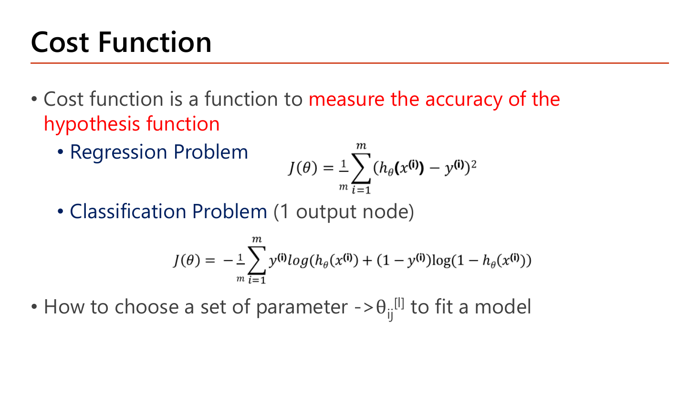
อาจารย์เปิดบทด้วยประโยคเดียวที่ทำสีไว้: cost function คือฟังก์ชันที่ใช้measure the accuracy of the hypothesis function — วัดว่า hypothesis function (ฟังก์ชันทำนายของเรา \(h_\theta(x)\)) แม่นแค่ไหน. และแยกเป็นสองแบบตามชนิดของปัญหา: Regression Problem · Classification Problem (กรณีหลังในสไลด์คือแบบ 1 output node).
แบบที่ 1 — Regression (ทำนายตัวเลขต่อเนื่อง เช่น ราคาบ้าน):
$$J(\theta) = \frac{1}{m}\sum_{i=1}^{m}\left(h_\theta(x^{(i)}) - y^{(i)}\right)^2$$เอาผลต่าง (ทำนาย − จริง) ของทุกตัวอย่างมายกกำลังสอง แล้วเฉลี่ย
ทำไมต้องยกกำลังสอง? เพราะ (1) กำจัดเครื่องหมาย — ทำนายเกิน 1 กับทำนายขาด 1 ผิดพอกัน ถ้าไม่ยกกำลังสองมันจะหักล้างกันจนดูเหมือนไม่ผิดเลย และ (2) ลงโทษความผิดใหญ่หนักกว่าความผิดเล็กแบบทวีคูณ (ผิด 2 หน่วยโดนปรับ 4 ส่วนผิด 1 หน่วยโดนปรับแค่ 1). ลองกับตัวเลขจริง บ้าน 3 หลัง ทำนาย \(h = [2, 4, 5]\) ล้าน ราคาจริง \(y = [3, 4, 7]\) ล้าน: ผลต่าง \([-1, 0, -2]\) ⇒ ยกกำลังสอง \([1, 0, 4]\) ⇒ ผลรวม 5 ⇒ \(J = 5/3 = 1.667\). สังเกตว่าบ้านหลังที่ 3 (ผิด 2 ล้าน) ออกแรงในค่า cost มากถึง 4 ใน 5 ส่วน — cost function ชนิดนี้จึงบีบให้โมเดลแก้ความผิดก้อนใหญ่ก่อน.
แบบที่ 2 — Classification (ทำนายคลาส 0/1, output 1 node) ใช้ cross-entropy:
$$J(\theta) = -\frac{1}{m}\sum_{i=1}^{m}\Big[y^{(i)}\log h_\theta(x^{(i)}) + (1-y^{(i)})\log\big(1 - h_\theta(x^{(i)})\big)\Big]$$ถ้าคำตอบจริงคือ 1 ให้ค่าปรับ \(-\log h\); ถ้าคำตอบจริงคือ 0 ให้ค่าปรับ \(-\log(1-h)\) — มีแค่เทอมเดียวทำงานเสมอ
กลไกของ "สวิตช์" นี้: ถ้า \(y=1\) ตัวคูณ \((1-y)=0\) ทำให้เทอมหลังหายไปทั้งก้อน เหลือ \(-\log h\); ถ้า \(y=0\) ตัวคูณ \(y=0\) ทำให้เทอมหน้าหายไป เหลือ \(-\log(1-h)\). ลองตัวเลข (กรณี \(y=1\)): ทำนาย \(h=0.9\) ⇒ ค่าปรับ \(-\ln 0.9 = 0.105\) (เกือบถูก ปรับน้อย); \(h=0.5\) ⇒ \(0.693\); \(h=0.1\) ⇒ \(2.303\) (มั่นใจผิดทาง ปรับหนักกว่า 20 เท่าของกรณีแรก). นี่คือเหตุผลที่ classification ไม่ใช้ MSE: cross-entropy ลงโทษ "มั่นใจแต่ผิด" อย่างรุนแรง ส่วน MSE จะปรับแค่ \((0.1-1)^2 = 0.81\) ซึ่งไม่ต่างจาก \((0.5-1)^2=0.25\) มากพอจะผลักโมเดลออกจากความมั่นใจผิดๆ.
บรรทัดสุดท้ายของหน้านี้คือคำถามที่เหลือทั้งบท: "How to choose a set of parameter → \(\theta_{ij}^{[l]}\) to fit a model" — จะเลือกค่า weight ทุกตัวอย่างไรให้ cost ต่ำที่สุด.
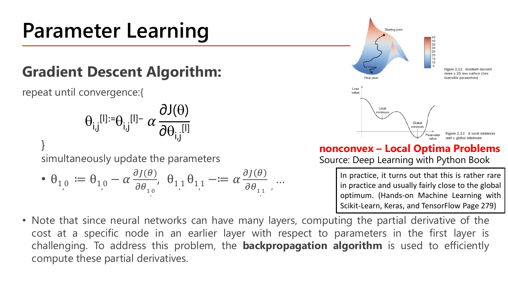
คำตอบคือ gradient descent สูตรเดียวกับ Lesson 1 แต่เขียนด้วย index ของเครือข่าย:
$$\theta_{ij}^{[l]} := \theta_{ij}^{[l]} - \alpha\,\frac{\partial J(\theta)}{\partial\theta_{ij}^{[l]}}$$อ่านทีละสัญลักษณ์: \(l\) = เลเยอร์, \(i\) = node ปลายทางในเลเยอร์ \(l\), \(j\) = node ต้นทางในเลเยอร์ \(l-1\), \(\alpha\) = learning rate (ก้าวยาวแค่ไหน), \(:=\) = "กำหนดค่าใหม่ให้" (ไม่ใช่สมการเท่ากับ). สไลด์ยกตัวอย่างสองตัวแรกให้เห็นว่ามันทำกับ weight ทุกตัว: \(\theta_{1,0} := \theta_{1,0} - \alpha\frac{\partial J}{\partial\theta_{1,0}}\), \(\theta_{1,1} := \theta_{1,1} - \alpha\frac{\partial J}{\partial\theta_{1,1}}\), …
คำว่า "simultaneously update" ในสไลด์คือกับดักข้อสอบ: ต้องคำนวณอนุพันธ์ทุกตัวจาก \(\theta\) ชุดเดิมให้เสร็จก่อน แล้วค่อยเขียนทับพร้อมกัน. ถ้าอัปเดต \(\theta_{1,0}\) ก่อนแล้วเอาค่าใหม่ไปคำนวณอนุพันธ์ของ \(\theta_{1,1}\) นั่นไม่ใช่ gradient descent แล้ว (เป็นคนละอัลกอริทึม และอาจไม่ลู่เข้า).
ด้านขวาของหน้ามีคำเตือนที่ทำสีไว้: nonconvex – Local Optima Problems. ความหมาย: พื้นผิวของ cost function ของเครือข่ายประสาทเทียมไม่ใช่ชามใบเดียว (convex) แบบ linear/logistic regression แต่เป็นภูมิประเทศที่มีหุบเขาหลายลูก. gradient descent เดินลงเขาได้อย่างเดียว ถ้ามันตกลงไปในหุบเล็ก (local minimum) มันจะติดอยู่ตรงนั้นแม้จะมีหุบที่ลึกกว่า (global minimum) อยู่อีกฝั่ง. นี่คือเหตุผลที่ผลการเทรนขึ้นกับค่าเริ่มต้นที่สุ่มมา — เทรนสองครั้งด้วยข้อมูลเดียวกันอาจได้ weight คนละชุด.
แต่สไลด์ก็ใส่กรอบปลอบใจไว้ด้วย (อ้าง Hands-on Machine Learning with Scikit-Learn, Keras, and TensorFlow หน้า 279): "In practice, it turns out that this is rather rare in practice and usually fairly close to the global optimum." — ในทางปฏิบัติ local optima ที่แย่จริงๆ พบได้ยาก และจุดที่ติดมักให้ค่า cost ใกล้เคียงกับ global optimum อยู่แล้ว. ข้อสอบชอบถามตรงนี้: คำตอบที่ถูกคือ "nonconvex เป็นปัญหาในทางทฤษฎี แต่ในทางปฏิบัติมักไม่ร้ายแรง" ไม่ใช่ "nonconvex ทำให้เทรนไม่ได้" และไม่ใช่ "cost ของ NN เป็น convex".
ย่อหน้าสุดท้ายของหน้าคือประตูสู่ทั้งบท: "since neural networks can have many layers, computing the partial derivative of the cost at a specific node in an earlier layer with respect to parameters in the first layer is challenging. To address this problem, the backpropagation algorithm is used to efficiently compute these partial derivatives." — สูตร gradient descent ข้างบนสมมติว่าเรามี \(\partial J/\partial\theta\) อยู่แล้ว. ปัญหาจริงคือจะหามันอย่างไรเมื่อ \(\theta\) อยู่ลึกเข้าไปหลายชั้น. backpropagation คือคำตอบนั้น.
ปัญหาที่หน้า 2 ทิ้งไว้คือ "หา \(\partial J/\partial\theta\) ของ weight ที่อยู่ลึกได้อย่างไร". อุปสรรคคือ weight ตัวนั้นไม่ได้ปรากฏใน \(J\) โดยตรง — มันส่งผลผ่านตัวกลางหลายทอด. เครื่องมือคณิตศาสตร์ที่จัดการเรื่อง "ผลกระทบผ่านตัวกลาง" ได้ชื่อว่า chain rule และมันคือเครื่องมือตัวเดียวที่ใช้ทั้งบท.
ฟังก์ชันซ้อนคือการเอาผลลัพธ์ของฟังก์ชันหนึ่งไปเป็น input ของอีกฟังก์ชัน. ตัวอย่างในชีวิตจริง: จำนวนชั่วโมงที่อ่านหนังสือ → คะแนนสอบ → เกรด. เกรดไม่ได้ขึ้นกับชั่วโมงอ่านโดยตรง แต่ขึ้นผ่านคะแนนสอบ.
เขียนเป็นคณิตศาสตร์: \(u = g(x)\) (ชั่วโมง → คะแนน) และ \(y = f(u)\) (คะแนน → เกรด) ⇒ \(y = f(g(x))\).
ตัวเลขจิ๋ว: อ่านเพิ่ม 1 ชั่วโมงได้คะแนนเพิ่ม 4 คะแนน (\(du/dx = 4\)); คะแนนเพิ่ม 1 คะแนนได้เกรดเพิ่ม 0.02 (\(dy/du = 0.02\)) ⇒ อ่านเพิ่ม 1 ชั่วโมงได้เกรดเพิ่ม \(4\times0.02 = 0.08\). อัตราแต่ละทอดคูณกัน — นั่นคือ chain rule ทั้งอัน.
สไลด์หน้า 3 นิยาม backpropagation ว่าเป็น algorithm ที่ใช้compute partial derivative (หรือที่เรียกว่าgradient) ของ output error ของเครือข่าย (หรือที่เรียกว่าcost) เทียบกับพารามิเตอร์แต่ละตัว (หรือที่เรียกว่าweight) เพื่อเอาไปเรียนรู้ weight ด้วยgradient descent นั่นคือค่า \(\dfrac{\partial J(\theta)}{\partial\theta_{ij}^{[l]}}\).
คำสี่คำนี้คือคำเดียวกันในภาษาต่างกัน และอาจารย์ตั้งใจทำสีเพื่อบอกว่าข้อสอบจะสลับคำพวกนี้: "partial derivative" = "gradient" (gradient คือเวกเตอร์ของอนุพันธ์ย่อยทุกตัว), "output error" = "cost", "parameter" = "weight". ประโยคสรุปที่มุมล่างของหน้าคือคำอธิบาย backprop ที่สั้นที่สุดในสไลด์ทั้งเล่ม: "Backpropagation → how much each weight connection contributed to the error" — backprop ตอบว่าเส้นเชื่อมแต่ละเส้นมีส่วนทำให้เกิดความผิดพลาดมากแค่ไหน.
สไลด์บอกต่อว่า backprop "built on the concept of the Chain Rule" — เทคนิคสำหรับ "differentiating a function of a function". รูปแบบ: ถ้า \(y = f(u)\) และ \(u = g(x)\) แล้วอนุพันธ์ของ \(f(g(x))\) คือ
$$\frac{dy}{dx} = \frac{dy}{du}\times\frac{du}{dx}$$เหมือนอัตราแลกเงิน: บาท→ดอลลาร์ ×0.03 แล้ว ดอลลาร์→ยูโร ×0.92 ⇒ บาท→ยูโร ×(0.03×0.92) — อัตราแต่ละทอด "คูณต่อกัน"
สไลด์ทิ้งโจทย์ฝึกมือไว้ 2 ข้อก่อนเข้า backprop จริง โดยไม่ได้เฉลย — เราจะแก้ให้ครบทั้งสองข้อ.
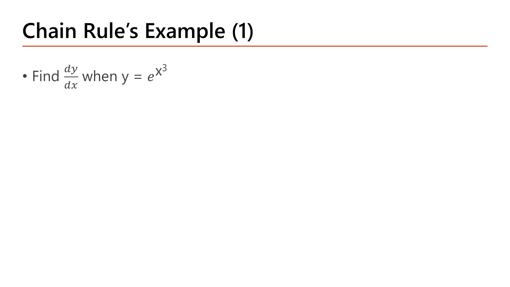
มองหา "ก้อนข้างใน" ที่ถูกฟังก์ชันอื่นครอบอยู่. ตรงนี้ \(x^3\) ถูก \(e^{(\cdot)}\) ครอบ:
$$u = x^3,\qquad y = e^{u}$$ใช้สูตร \(\frac{d}{du}e^u = e^u\) (ฟังก์ชัน \(e\) พิเศษตรงที่อนุพันธ์เท่ากับตัวมันเอง) และ \(\frac{d}{dx}x^n = nx^{n-1}\):
$$\frac{dy}{du} = e^{u} = e^{x^3},\qquad \frac{du}{dx} = 3x^2$$สูตรให้ \(3(1)^2e^{1} = 8.155\). ลองขยับจริง: \(x=1.001\) ⇒ \(e^{1.001^3} = e^{1.003003}\) ⇒ \((e^{1.003003}-e^{1})/0.001 = 8.175\) ✓ ใกล้ 8.155 (ต่างเพราะขั้นที่ขยับยังไม่เล็กพอ)
แพทเทิร์น: "คงฟังก์ชันชั้นนอกไว้ทั้งดุ้น (\(e^{x^3}\)) แล้วคูณอนุพันธ์ของชั้นใน (\(3x^2\))" — กลไกเดียวกับที่ใช้แยก \(\partial J/\partial\theta\) ทีละชั้นในโครงข่าย.
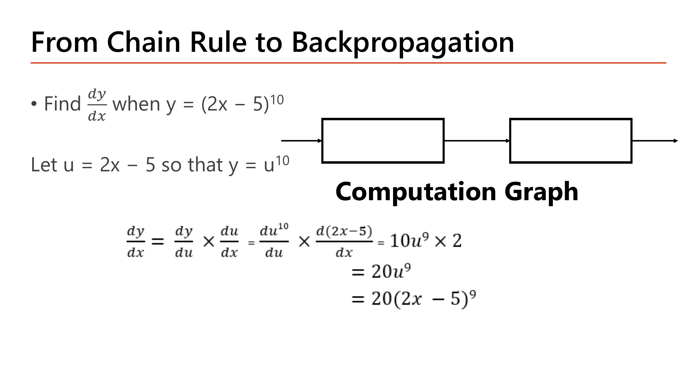
\(u^{10}\) ใช้สูตรกำลัง; \(2x-5\) อนุพันธ์คือ 2 (ค่าคงที่ −5 หายไป เพราะอนุพันธ์ของค่าคงที่เป็น 0):
$$\frac{dy}{du} = 10u^{9},\qquad \frac{du}{dx} = 2$$ลองขยับ \(x\) จาก 3 เป็น 3.001: \(u=1.002\) ⇒ \(y = 1.002^{10} = 1.0202\) ⇒ \(\Delta y/\Delta x = 0.0202/0.001 \approx 20.18\) ✓ (ใกล้ 20)
สไลด์เรียกโครงสร้าง \(x\to u\to y\) นี้ว่า computation graph — และหัวข้อสไลด์คือ "From Chain Rule to Backpropagation" เพราะโครงข่ายประสาทเทียมคือ computation graph ที่ยาวกว่านี้ (\(x\to z^{[1]}\to a^{[1]}\to z^{[2]}\to a^{[2]}\to J\)) แค่นั้นเอง.
ตอนนี้เรามีเครื่องมือ (chain rule) และมีเป้าหมาย (\(\partial J/\partial\theta\)) แล้ว. หัวข้อนี้คือการเอาเครื่องมือไปจ่อกับเครือข่ายจริง ทีละสูตร จนได้ "สูตรสำเร็จ" ที่ใช้กับเครือข่ายกี่ชั้นก็ได้.
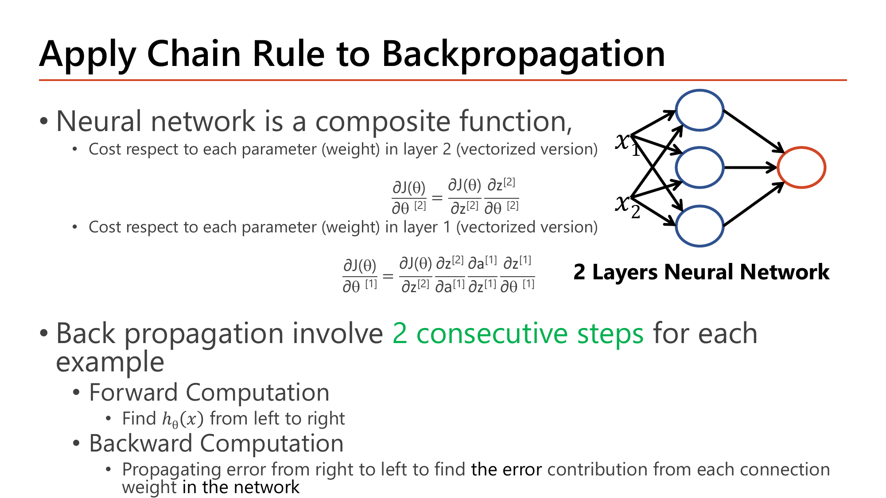
ประโยคเปิดของหน้านี้คือกุญแจ: "Neural network is a composite function" — เครือข่ายคือฟังก์ชันซ้อนฟังก์ชันตามที่เราเพิ่งฝึกใน §1. เมื่อเป็นเช่นนั้น chain rule ก็ใช้ได้ทันที และสไลด์เขียนสองสมการเทียบกันให้เห็นว่า "ยิ่งลึกยิ่งยาว":
$$\frac{\partial J(\theta)}{\partial\theta^{[2]}} = \frac{\partial J(\theta)}{\partial z^{[2]}}\,\frac{\partial z^{[2]}}{\partial\theta^{[2]}}$$ $$\frac{\partial J(\theta)}{\partial\theta^{[1]}} = \frac{\partial J(\theta)}{\partial z^{[2]}}\,\frac{\partial z^{[2]}}{\partial a^{[1]}}\,\frac{\partial a^{[1]}}{\partial z^{[1]}}\,\frac{\partial z^{[1]}}{\partial\theta^{[1]}}$$weight ของ layer สุดท้ายมี 2 ทอด; weight ของ layer แรกมี 4 ทอด — จำนวนทอด = ระยะทางจาก weight ตัวนั้นไปถึง cost
ลองไล่ทีละทอดของสมการล่างเพื่อให้เห็นว่ามันไม่ใช่สูตรที่ท่องจำ แต่คือ "เส้นทางเดิน": \(\theta^{[1]}\) ส่งผลต่อ \(z^{[1]}\) (ทอดที่ 4 นับจากขวา) → \(z^{[1]}\) ส่งผลต่อ \(a^{[1]}\) ผ่าน activation (ทอดที่ 3) → \(a^{[1]}\) ส่งผลต่อ \(z^{[2]}\) (ทอดที่ 2) → \(z^{[2]}\) ส่งผลต่อ \(J\) (ทอดที่ 1). อ่านจากซ้ายไปขวาในสมการคืออ่านจาก cost ย้อนกลับไปหา weight — ซึ่งก็คือชื่อ "back-propagation" นั่นเอง.
สไลด์สรุปว่า backpropagation ประกอบด้วย2 consecutive steps ต่อ 1 ตัวอย่าง: Forward Computation — "Find \(h_\theta(x)\) from left to right" คือไล่คำนวณจาก input ไป output เพื่อให้ได้ค่าทำนาย; และ Backward Computation — "Propagating error from right to left to find the error contribution from each connection weight in the network" คือไล่ error กลับจาก output มา input เพื่อหาว่าเส้นเชื่อมแต่ละเส้นรับผิดชอบความผิดพลาดเท่าไร. คำว่า consecutive (ต่อเนื่องกัน/เรียงลำดับ) สำคัญ: ทำ backward ก่อน forward ไม่ได้เด็ดขาด เพราะ backward ต้องใช้ค่า \(z, a\) ที่ forward ผลิตไว้.
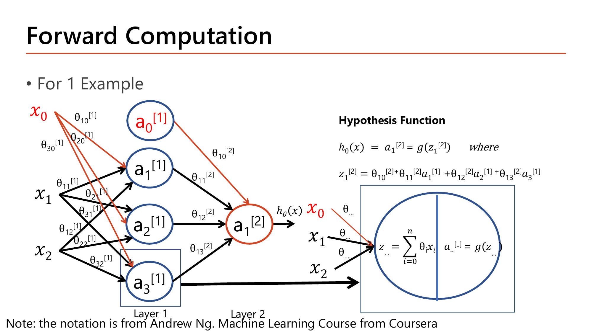
เครือข่ายในหน้านี้คือ input 2 ตัว → hidden 3 node → output 1 node. สูตรพื้นฐานที่ใช้กับทุก node มีสองบรรทัดเท่านั้น:
$$z = \sum_{i=0}^{n}\theta_i x_i,\qquad a = g(z)$$บรรทัดแรกคือ "รวมข้อมูลเข้าแบบถ่วงน้ำหนัก" บรรทัดที่สองคือ "บีบผ่าน activation". จุดที่ต้องสังเกตคือผลรวมเริ่มที่ \(i=0\) ไม่ใช่ \(i=1\) — เพราะ index 0 คือ bias. สไลด์ทำสีแดงไว้ที่ \(x_0\) (bias unit ของ input layer) และ \(a_0^{[1]}\) (bias unit ของ hidden layer) ซึ่งเป็น node พิเศษที่มีค่าเท่ากับ 1 เสมอ ไม่ได้มาจากการคำนวณ และไม่มีเส้นเข้า. ที่ต้องทำสีเพราะนักเรียนมักลืม แล้วนับมิติของ \(\theta\) ผิดไปหนึ่งคอลัมน์.
เขียนสูตรของ output node ออกมาเต็มๆ ตามที่สไลด์ให้:
$$z_1^{[2]} = \theta_{10}^{[2]} + \theta_{11}^{[2]}a_1^{[1]} + \theta_{12}^{[2]}a_2^{[1]} + \theta_{13}^{[2]}a_3^{[1]},\qquad h_\theta(x) = a_1^{[2]} = g\!\left(z_1^{[2]}\right)$$อ่าน index ให้ชัด (ระบบนี้มาจาก Andrew Ng ตามที่สไลด์หมายเหตุไว้): \(\theta_{12}^{[2]}\) หมายถึง "weight ใน layer 2 จาก node 2 ของ layer ก่อนหน้า ไปยัง node 1 ของ layer นี้" — ตัวเลขตัวแรกคือปลายทาง ตัวที่สองคือต้นทาง. ลำดับนี้ดูกลับด้านกับสามัญสำนึก แต่มันทำให้เขียนเป็นเมทริกซ์แล้วคูณได้พอดี (\(z = \theta a\)). ส่วน \(\theta_{10}^{[2]}\) ที่ต้นทางเป็น 0 คือ weight ของ bias — ซึ่งก็คือ \(\theta_{10}^{[2]}\times a_0^{[1]} = \theta_{10}^{[2]}\times 1\) นั่นเอง จึงเขียนสั้นๆ ได้แค่ \(\theta_{10}^{[2]}\).
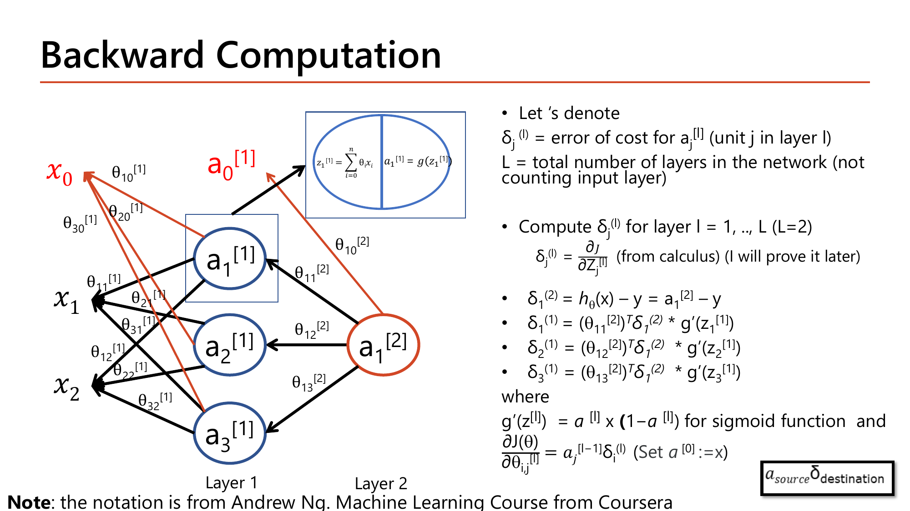
ก่อนดูสูตร ต้องเข้าใจว่าทำไมถึงต้องประดิษฐ์ตัวแปรชื่อ \(\delta\) ขึ้นมาเลย. เหตุผลคือความประหยัด: สังเกตว่าในสมการ chain rule ทั้งสองอันของหน้า 6 เทอม \(\dfrac{\partial J}{\partial z^{[2]}}\) ปรากฏเหมือนกัน. ถ้าเครือข่ายมี weight 1,000 ตัว เราคงไม่อยากคำนวณเทอมนี้ซ้ำ 1,000 ครั้ง. จึงตั้งชื่อมันไว้ครั้งเดียวแล้วใช้ซ้ำ — ชื่อนั้นคือ \(\delta\).
สไลด์นิยามว่า \(\delta_j^{(l)}\) = "error of cost for \(a_j^{[l]}\) (unit \(j\) in layer \(l\))" และให้สูตรทางคณิตศาสตร์กำกับว่า
$$\delta_j^{(l)} = \frac{\partial J}{\partial z_j^{[l]}}\quad\text{(from calculus — สไลด์เขียนว่า "I will prove it later")}$$อ่านเป็นภาษาคน: "ถ้าดัน \(z\) ของ node นี้ขึ้นนิดเดียว cost จะเปลี่ยนไปเท่าไร" — ตัวเลขนี้คือ "ส่วนแบ่งความผิด" ของ node นั้น. โปรดสังเกตความไม่ตรงกันเล็กๆ ในสไลด์: คำบรรยายบอกว่าเป็น error ของ \(a_j^{[l]}\) แต่สูตรหารเทียบ \(z_j^{[l]}\). ตัวที่ใช้จริงทุกที่คือแบบที่หารเทียบ \(z\) (ถ้าใช้ \(a\) สูตร \(\delta^{[L]} = a^{[L]}-y\) จะไม่จริง) — จำแบบนี้ไปตอบข้อสอบ. สไลด์ยังนิยาม \(L\) = total number of layers in the network (not counting input layer) ⇒ เครือข่ายในรูปนี้มี \(L=2\).
จากนั้นสไลด์ให้สูตรสำเร็จ 4 บรรทัด (ยังไม่พิสูจน์ — พิสูจน์อยู่หน้า 10):
$$\delta_1^{(2)} = h_\theta(x) - y = a_1^{[2]} - y$$ $$\delta_1^{(1)} = \left(\theta_{11}^{[2]}\right)^{\!\top}\delta_1^{(2)} * g'\!\left(z_1^{[1]}\right),\quad \delta_2^{(1)} = \left(\theta_{12}^{[2]}\right)^{\!\top}\delta_1^{(2)} * g'\!\left(z_2^{[1]}\right),\quad \delta_3^{(1)} = \left(\theta_{13}^{[2]}\right)^{\!\top}\delta_1^{(2)} * g'\!\left(z_3^{[1]}\right)$$พร้อมกำกับว่าสำหรับ sigmoid \(g'(z^{[l]}) = a^{[l]}(1-a^{[l]})\) และสูตรแปลง \(\delta\) เป็น gradient:
$$\frac{\partial J(\theta)}{\partial\theta_{ij}^{[l]}} = a_j^{[l-1]}\,\delta_i^{(l)}\qquad\text{(กำหนด }a^{[0]} := x\text{)}$$output: error = ทำนาย − จริง. hidden: node นี้ "ยืม" error ของ layer ถัดไป × weight ที่เชื่อม × ความชันของ activation ของ node นี้เอง. gradient ของเส้นใดๆ = (error ปลายทาง) × (ค่าที่ไหลมาจากต้นทาง)
ทำไม \(\delta\) ของ hidden node ต้องมี 3 ตัวคูณพอดี — แต่ละตัวแปลว่าอะไร:
ส่วนเครื่องหมาย \(\top\) (transpose) และ \(*\) ในสไลด์: ในรูปแบบเวกเตอร์ \(\theta^{[l]\top}\delta^{[l]}\) คือคูณเมทริกซ์เพื่อกระจาย error ย้อนกลับ ส่วน \(*\) คือคูณทีละสมาชิก (element-wise) กับ \(g'\) ไม่ใช่คูณเมทริกซ์. ในสูตรรายตัวข้างบน \(\theta_{11}^{[2]}\) เป็นเลขตัวเดียว transpose จึงไม่ทำอะไรเลย — อาจารย์เขียน \(\top\) ไว้เพื่อให้รูปสูตรตรงกับเวอร์ชันเมทริกซ์ในหน้า 18.
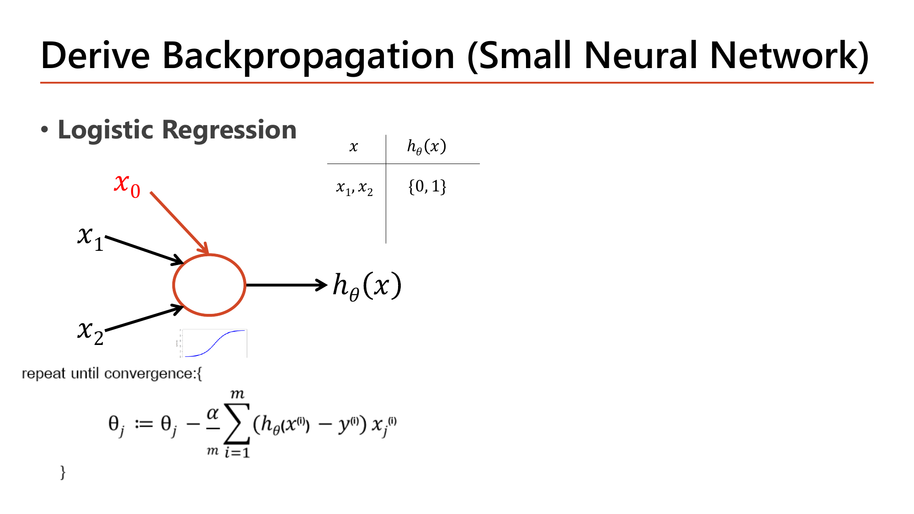
ก่อนพิสูจน์สูตรกับเครือข่ายเต็ม สไลด์ย้อนกลับไปดูเครือข่ายที่เล็กที่สุดเท่าที่จะเป็นไปได้: node เดียว ซึ่งก็คือ logistic regression ที่เรียนมาแล้วใน Lesson 1. โครงสร้าง: รับ \(x_1, x_2\) (บวก \(x_0\) เป็น bias) → sigmoid node ตัวเดียว → output \(h_\theta(x)\) ที่ตีความเป็นคลาส \(\{0,1\}\). กฎอัปเดตของมันคือ
$$\theta_j := \theta_j - \frac{\alpha}{m}\sum_{i=1}^{m}\left(h_\theta(x^{(i)}) - y^{(i)}\right)x_j^{(i)}$$เทียบกับสูตร backprop ที่เพิ่งเห็น: เทอม \(\left(h_\theta(x)-y\right)\) คือ \(\delta\) ของ output พอดี และ \(x_j\) คือ \(a_j^{[0]}\) พอดี ⇒ gradient \(= \delta\times a^{[0]}\) ⇒ ตรงกับกฎ \(\dfrac{\partial J}{\partial\theta_{ij}^{[l]}} = a_j^{[l-1]}\delta_i^{(l)}\) เป๊ะ. ข้อสรุปที่ได้จากหน้านี้: backpropagation ไม่ใช่สูตรใหม่เอี่ยม มันคือการขยายสูตรของ logistic regression ให้ไล่ย้อนได้หลายชั้น — ถ้าเครือข่ายมีชั้นเดียว backprop จะยุบกลายเป็น logistic regression ทันที. นี่คือเหตุผลที่อาจารย์ใส่หน้านี้คั่นก่อนพิสูจน์: ให้เห็นว่าเรากำลังต่อยอดจากของที่รู้อยู่แล้ว ไม่ใช่เริ่มจากศูนย์.
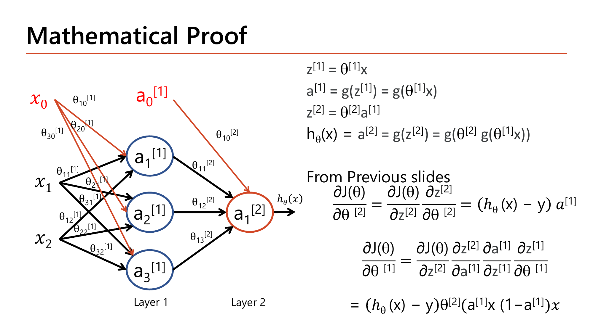
สไลด์เริ่มด้วยการเขียนเครือข่ายทั้งอันเป็นสมการซ้อนกัน 5 บรรทัด ซึ่งคือ "computation graph" ของเรานั่นเอง:
$$z^{[1]} = \theta^{[1]}x,\quad a^{[1]} = g(z^{[1]}),\quad z^{[2]} = \theta^{[2]}a^{[1]},\quad h_\theta(x) = a^{[2]} = g(z^{[2]}) = g\big(\theta^{[2]}g(\theta^{[1]}x)\big)$$บรรทัดขวาสุดคือหัวใจ: \(h\) คือ \(g\) ซ้อน \(g\) — composite function ชัดๆ จึงใช้ chain rule ได้. ต่อไปนี้คือการพิสูจน์ทั้งสามชิ้นแบบละเอียดทุกบรรทัด.
ใช้ \(\frac{d}{da}\ln a = \frac{1}{a}\) และ \(\frac{d}{da}\ln(1-a) = \frac{-1}{1-a}\) (ตัว −1 มาจาก chain rule ของ \(1-a\)) แล้วรวมเศษส่วน:
$$\frac{\partial J}{\partial a} = -\frac{y}{a} + \frac{1-y}{1-a} = \frac{-y(1-a) + (1-y)a}{a(1-a)} = \frac{-y+ya+a-ya}{a(1-a)} = \frac{a-y}{a(1-a)}$$$$\delta^{[2]} = a^{[2]} - y = h_\theta(x) - y$$
การหักล้างในขั้นที่ 4 ไม่ใช่ความบังเอิญ — cross-entropy ถูกออกแบบมาคู่กับ sigmoid เพื่อให้ตัวคูณ \(g'\) ที่ output layer หายไป. ผลคือถ้าโมเดลมั่นใจผิด (\(a\) ใกล้ 0 แต่ \(y=1\)) gradient ยังใหญ่พอจะแก้ตัวได้ ไม่โดน \(g'\approx0\) ฆ่าทิ้ง.
\(z^{[2]} = \theta_{10}^{[2]}a_0^{[1]}+\theta_{11}^{[2]}a_1^{[1]}+\theta_{12}^{[2]}a_2^{[1]}+\dots\) เมื่อหารเทียบ \(\theta_{1j}^{[2]}\) ตัวเดียว เทอมอื่นทั้งหมดเป็นค่าคงที่ (อนุพันธ์ = 0) เหลือแค่ตัวคูณของมันเอง:
$$\frac{\partial z^{[2]}}{\partial\theta_{1j}^{[2]}} = a_j^{[1]}\qquad(\text{และ } a_0^{[1]}=1 \text{ สำหรับ bias})$$ตรงกับที่สไลด์เขียนไว้ว่า \(\dfrac{\partial J(\theta)}{\partial\theta^{[2]}} = \left(h_\theta(x)-y\right)a^{[1]}\). ความหมายเชิงสัญชาตญาณ: เส้นที่ส่งสัญญาณแรง (\(a_j^{[1]}\) ใหญ่) ไปยัง node ที่ผิดมาก (\(\delta\) ใหญ่) คือเส้นที่ต้องแก้มากที่สุด.
ทอด 1: \(\delta^{[2]} = h-y\) จากพิสูจน์ ①. ทอด 2: \(z^{[2]}\) เป็นผลรวมถ่วงน้ำหนักของ \(a^{[1]}\) ⇒ อนุพันธ์เทียบ \(a_j^{[1]}\) คือสัมประสิทธิ์ของมัน นั่นคือ \(\theta_{1j}^{[2]}\). ทอด 3: \(a = g(z)\) ⇒ อนุพันธ์คือ \(g'\) ซึ่งสำหรับ sigmoid เท่ากับ \(a_j^{[1]}(1-a_j^{[1]})\). ทอด 4: \(z_j^{[1]} = \sum_i\theta_{ji}^{[1]}x_i\) ⇒ อนุพันธ์เทียบ \(\theta_{ji}^{[1]}\) คือ \(x_i\).
สไลด์เขียนผลลัพธ์เต็มไว้ว่า \(\dfrac{\partial J(\theta)}{\partial\theta^{[1]}} = \left(h_\theta(x)-y\right)\theta^{[2]}\big(a^{[1]}(1-a^{[1]})\big)x\) — ตรงกับผลคูณ 4 ทอดของเราทุกตัว. และเมื่อจับกลุ่มแล้ว ทุก layer ได้กฎเดียวกัน:
$$\frac{\partial J}{\partial\theta_{ij}^{[l]}} = \delta_i^{[l]}\cdot a_j^{[l-1]}$$(error ของ node ปลายทาง) × (ค่าที่ส่งมาจากต้นทาง). สังเกตว่าเครือข่ายยิ่งลึกยิ่งมีตัวคูณ \(g'\) มาก — รากของ vanishing gradient ใน Lesson 5.
รูปแบบเมทริกซ์ (ที่ใช้ตอนเขียนโค้ด — ทำทุก node ใน layer พร้อมกัน):
$$\delta^{[l-1]} = \left(\theta^{[l]\top}\delta^{[l]}\right)\odot g'\!\left(z^{[l-1]}\right)$$เครื่องหมาย \(\odot\) คือคูณทีละสมาชิก (element-wise) ไม่ใช่คูณเมทริกซ์ — ตรงกับเครื่องหมาย \(*\) ที่สไลด์ใช้. ตรวจขนาดให้เห็นภาพ: layer 1 มี 3 node, layer 2 มี 1 node ⇒ \(\theta^{[2]}\) ขนาด \(1\times4\) ⇒ \(\theta^{[2]\top}\delta^{[2]}\) ขนาด \((4\times1)(1\times1)=4\times1\) แล้วตัดแถว bias (แถวแรก) ทิ้งเหลือ \(3\times1\) เพื่อคูณกับ \(g'(z^{[1]})\) ที่มีขนาด \(3\times1\). ทำไมต้องตัดแถว bias: เพราะ \(a_0^{[1]}\) เป็นค่าคงที่ 1 ไม่ได้มาจาก \(z\) ใดๆ จึงไม่มี \(\delta\) ของตัวเอง — นี่คือจุดที่โค้ดของนักเรียนพังบ่อยที่สุดเวลาเขียน backprop เอง.
สไลด์หน้า 11–16 คือตัวอย่างที่อาจารย์เดินให้ดูในคาบ โดยเว้นตัวเลขไว้ทุกช่อง — นี่คือแบบฝึกหัดที่มีโอกาสออกสอบสูงที่สุดในบท. เราจะไล่ทีละหน้าและกรอกตัวเลขให้ครบ (ทุกค่าตรวจด้วย numpy แล้ว).
โจทย์: "Find partial derivative of each weight and do gradient descent for 1 iteration (2 examples) (Assume all sigmoid activation functions, \(y = \begin{bmatrix}1\\1\end{bmatrix}\))" — เครือข่าย input \(x_1,x_2\) (+ bias \(x_0=1\)) → hidden 2 node → output 1 node, sigmoid ทุก node, คำตอบจริงของทั้งสองตัวอย่างคือ 1.
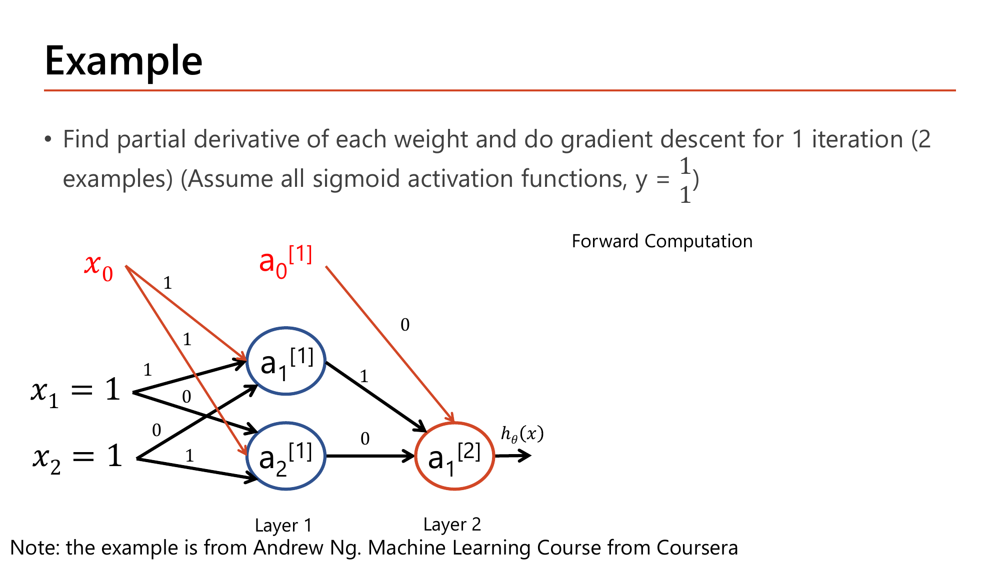
ตัวเลขที่เขียนกำกับบนเส้นแต่ละเส้นคือค่า weight เริ่มต้น. อ่านออกมาเป็นเมทริกซ์ (แถว = node ปลายทาง; คอลัมน์ = bias, \(x_1\), \(x_2\)):
$$\theta^{[1]} = \begin{bmatrix}1&1&0\\1&0&1\end{bmatrix},\qquad \theta^{[2]} = \begin{bmatrix}0&1&0\end{bmatrix}\ (\text{bias},\ a_1^{[1]},\ a_2^{[1]})$$hidden node 1 ใช้เฉพาะ \(x_1\) (weight ของ \(x_2\) = 0); hidden node 2 ใช้เฉพาะ \(x_2\); output ใช้เฉพาะ hidden node 1
ค่า weight ที่เป็น 0 สามตัว (\(\theta_{12}^{[1]}=0\), \(\theta_{21}^{[1]}=0\), \(\theta_{12}^{[2]}=0\)) ไม่ได้ใส่มาเล่นๆ — มันจะทำให้เกิดผลลัพธ์ที่น่าตกใจสองอย่างข้างล่าง และนั่นคือสิ่งที่อาจารย์อยากให้เห็น.
(ตัวแรกคือ bias × 1, ตัวที่สองคือ weight ของ \(x_1\), ตัวที่สามคือ weight ของ \(x_2\))
ทำนายได้ \(0.707\) ในขณะที่คำตอบจริงคือ \(1\) ⇒ ทำนายต่ำไป ⇒ เดี๋ยว backward จะให้ gradient ที่ผลักให้ weight เพิ่มขึ้น.
หน้านี้กลับทิศลูกศรทุกเส้นเพื่อย้ำว่าตอนนี้เรากำลังส่ง "ความผิด" เดินสวนทางกลับ โดยใช้ weight ชุดเดิม (ยังไม่อัปเดต). คำนวณได้ดังนี้:
เครื่องหมายลบแปลว่า "ทำนายต่ำกว่าความจริง".
\(\delta_2^{(1)}=0\) เป๊ะเพราะ weight ขาออกเป็น 0: ถ้าเส้นที่ส่งข้อมูลไปข้างหน้ามี weight 0 gradient ที่ไหลย้อนผ่านเส้นนั้นก็เป็น 0 — node นี้ไม่ได้เรียนรู้อะไรเลยในรอบนี้ ทั้งที่มันคำนวณค่า \(a_2^{[1]}=0.8808\) ออกมาอย่างขยันขันแข็ง.
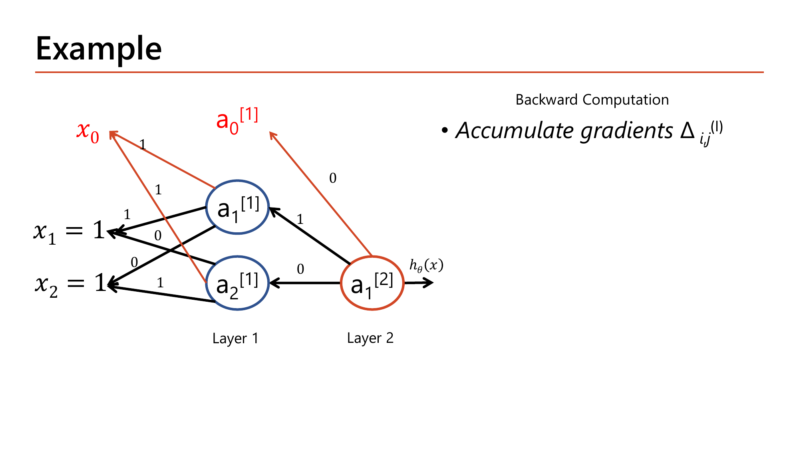
หน้านี้เพิ่มคำสั่งเดียวคือ "Accumulate gradients \(\Delta_{ij}^{(l)}\)" — แปลว่า อย่าเพิ่งอัปเดต weight ให้เอา gradient ของตัวอย่างนี้ไปบวกสะสมไว้ในตัวแปร \(\Delta\) ก่อน แล้วค่อยไปทำตัวอย่างที่ 2. เหตุผล: cost ที่เรานิยามไว้หน้า 1 คือค่าเฉลี่ยของทุกตัวอย่าง ดังนั้น gradient ของมันก็ต้องเป็นค่าเฉลี่ยของ gradient รายตัวอย่างเช่นกัน. ใช้สูตร \(\Delta_{ij}^{(l)} \mathrel{+}= a_j^{[l-1]}\delta_i^{(l)}\) กับตัวอย่างที่ 1:
ทั้งสามช่องเท่ากันหมด (\(-0.030764\)) เพราะ \(x_0=x_1=x_2=1\) พอดีในตัวอย่างนี้.
หลังตัวอย่างที่ 1: \(\Delta^{(2)} = [-0.29301,\ -0.25808,\ -0.25808]\) และ \(\Delta^{(1)} = \begin{bmatrix}-0.030764&-0.030764&-0.030764\\0&0&0\end{bmatrix}\) — ยังไม่ใช่ gradient สุดท้าย ต้องรอตัวอย่างที่ 2 มาบวกเพิ่มก่อน.
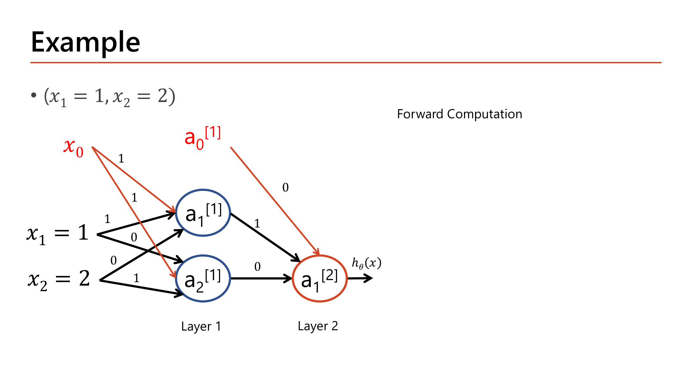
ตัวอย่างที่ 2 เปลี่ยนแค่ \(x_2\) จาก 1 เป็น 2 (weight ยังเป็นชุดเดิม เพราะเรายังไม่ได้อัปเดต).
node 1 ไม่ขยับเลยเพราะ weight ของ \(x_2\) เป็น 0; node 2 ขยับจาก 0.8808 เป็น 0.95257.
ข้อสังเกตสำคัญ: \(h(x)\) เท่ากันเป๊ะกับตัวอย่างที่ 1 (0.70699) ทั้งที่ input ต่างกัน — เพราะ (1) \(a_1^{[1]}\) ไม่ขึ้นกับ \(x_2\) (weight = 0) และ (2) output ไม่ใช้ \(a_2^{[1]}\) (weight = 0). ข้อมูลของ \(x_2\) ไหลเข้าไปถึง \(a_2^{[1]}\) จริง แต่ตันอยู่ตรงนั้น "weight = 0" คือกำแพงที่ปิดทั้งขาไปและขากลับ.
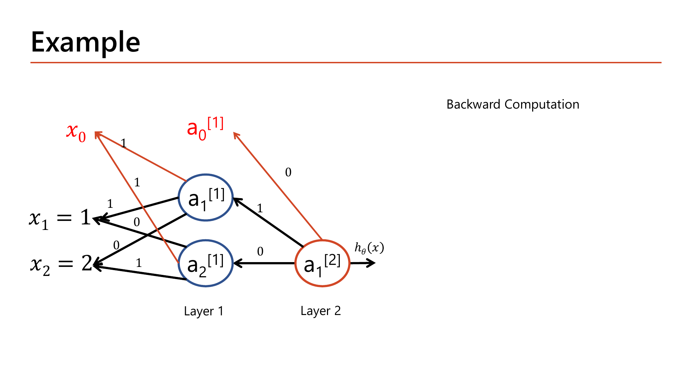
รวมสองตัวอย่างแล้ว: \(\Delta^{(2)} = [-0.58603,\ -0.51617,\ -0.53720]\) และ \(\Delta^{(1)}\) แถว 1 \(= [-0.061529,\ -0.061529,\ -0.092293]\) แถว 2 เป็นศูนย์ทั้งแถว. สังเกตว่าช่อง \(\Delta_{12}^{(1)}\) โตกว่าเพื่อนเพราะตัวอย่างที่ 2 มี \(x_2=2\) (ยิ่ง input ใหญ่ ยิ่งรับผิดชอบมาก).
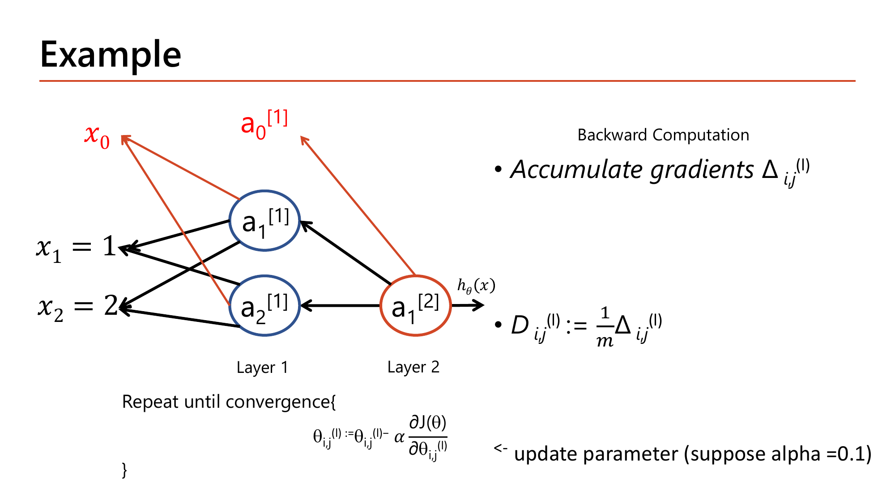
หน้าสุดท้ายของตัวอย่างระบุสองอย่าง: เฉลี่ยด้วย \(D_{ij}^{(l)} := \frac{1}{m}\Delta_{ij}^{(l)}\) แล้วอัปเดตด้วย gradient descent โดย "suppose alpha = 0.1".
ตัวอย่างการคำนวณช่องหนึ่ง: \(\theta_{11}^{[2]} = 1 - 0.1\times(-0.25808) = 1 + 0.025808 = 1.025808\) — gradient เป็นลบ ⇒ weight เพิ่มขึ้น เพราะสูตรมีเครื่องหมายลบนำหน้าอยู่แล้ว.
forward ใหม่ด้วย weight ที่อัปเดตแล้ว: ตัวอย่างที่ 1 ได้ \(h = 0.72265\) ตัวอย่างที่ 2 ได้ \(h = 0.72313\) (จากเดิม 0.70699 ทั้งคู่) ⇒ cost เฉลี่ย \(-\ln h\) ลดจาก \(0.34674\) เหลือ \(0.32450\) ✓
ทุก weight ที่ gradient เป็นลบ (\(h<y\) — ทำนายต่ำไป) เพิ่มขึ้น เพื่อดัน \(h\) เข้าใกล้ \(y=1\); แถว node 2 ไม่ขยับเลยแม้แต่ช่องเดียวเพราะ gradient เป็น 0 ทั้งแถว. ถ้าเทรนต่อไปเรื่อยๆ ด้วย weight ชุดนี้ hidden node 2 จะไม่มีวันได้เรียนรู้ เพราะ \(\theta_{12}^{[2]}\) ก็ไม่เคยถูกอัปเดตให้พ้นจาก... เดี๋ยวก่อน — ดูที่ \(\theta_{12}^{[2]}\) หลังอัปเดต: มันกลายเป็น 0.02686 แล้ว (เพราะ gradient ของมันคือ \(a_2^{[1]}\delta^{(2)} \neq 0\)) ⇒ รอบถัดไป node 2 จะเริ่มมี \(\delta\) ไม่เป็นศูนย์และกลับมาเรียนรู้ได้. บทเรียน: weight ขาออกที่เป็น 0 ปิดกั้น gradient ของ node นั้นเฉพาะรอบปัจจุบัน ไม่ใช่ตลอดไป ตราบใดที่ตัว weight ขาออกเองยังได้รับการอัปเดต.
ตัวอย่างใน §3 ทำกับเครือข่าย 2 layer 2 node. คำถามคือ "ถ้าเครือข่ายมี 5 layer ละ 100 node ต้องทำอย่างไร" — คำตอบคือทำเหมือนเดิมทุกอย่าง เพราะสูตรไม่ได้อ้างถึงขนาดของเครือข่ายเลย. สไลด์หน้า 17–18 จึงเขียนเป็นอัลกอริทึมทั่วไป.
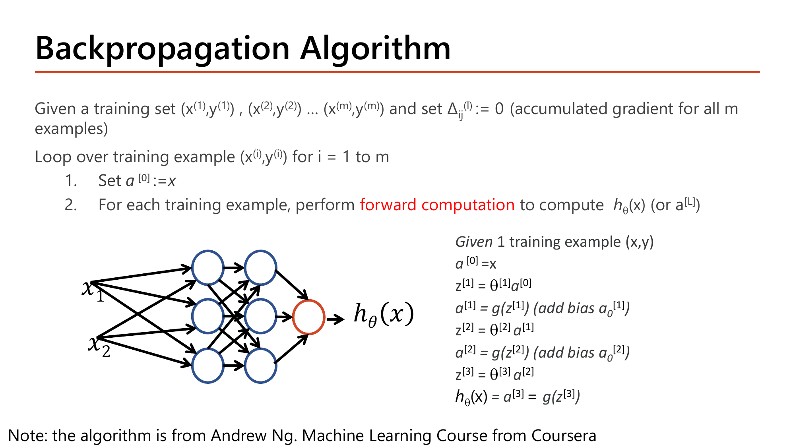
สไลด์เริ่มจาก "Given a training set \((x^{(1)},y^{(1)}), (x^{(2)},y^{(2)}) \dots (x^{(m)},y^{(m)})\) and set \(\Delta_{ij}^{(l)} := 0\)" — บรรทัดนี้คือการล้างกระปุกสะสม gradient ให้เป็นศูนย์ก่อนเริ่มรอบใหม่ทุกครั้ง. ถ้าลืมล้าง gradient ของรอบก่อนจะบวกทบเข้ามาเรื่อยๆ จนก้าวใหญ่เกินจริง (บั๊กคลาสสิกของคนเขียน backprop เอง และเป็นเหตุผลที่ PyTorch ต้องเรียก optimizer.zero_grad() ทุกรอบ).
จากนั้นวนทุกตัวอย่าง \(i = 1\) ถึง \(m\) แล้วทำสองขั้น: (1) "Set \(a^{[0]} := x\)" — ตั้งชื่อ input ว่าเป็น activation ของ layer 0 เพื่อให้สูตรเดียว \(\partial J/\partial\theta_{ij}^{[l]} = a_j^{[l-1]}\delta_i^{(l)}\) ใช้ได้กับ layer แรกด้วย; (2) ทำforward computation เพื่อหา \(h_\theta(x)\) (หรือ \(a^{[L]}\)). สไลด์แสดงตัวอย่างเครือข่าย 3 layer เต็มๆ ว่าไล่อย่างไร:
$$a^{[0]} = x \to z^{[1]} = \theta^{[1]}a^{[0]} \to a^{[1]} = g(z^{[1]})\ (\text{add bias } a_0^{[1]})$$ $$\to z^{[2]} = \theta^{[2]}a^{[1]} \to a^{[2]} = g(z^{[2]})\ (\text{add bias } a_0^{[2]}) \to z^{[3]} = \theta^{[3]}a^{[2]} \to h_\theta(x) = a^{[3]} = g(z^{[3]})$$วงเล็บ "(add bias)" ที่สไลด์เขียนกำกับไว้สองครั้งคือขั้นตอนที่คนลืมบ่อยที่สุด: หลังคำนวณ \(a^{[l]}\) เสร็จ ต้องแปะเลข 1 เข้าไปด้านหน้าเวกเตอร์ ก่อนส่งเข้า layer ถัดไป ไม่งั้นมิติจะไม่ตรงกับ \(\theta^{[l+1]}\) ที่มี \(s_l+1\) คอลัมน์.
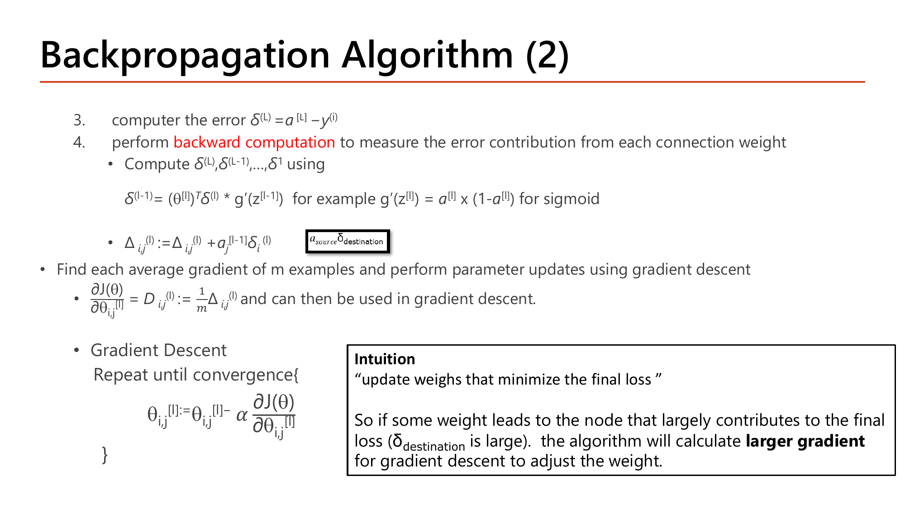
หน้านี้ต่อจากขั้นที่ 2 ด้วยขั้นที่ 3 และ 4. ขั้นที่ 3: "compute the error \(\delta^{(L)} = a^{[L]} - y^{(i)}\)" — error ที่ชั้นนอกสุด. ขั้นที่ 4: ทำbackward computation "to measure the error contribution from each connection weight" โดยคำนวณ \(\delta^{(L)}, \delta^{(L-1)}, \dots, \delta^{(1)}\) ตามลำดับย้อนกลับด้วยสูตร
$$\delta^{(l-1)} = \left(\theta^{[l]}\right)^{\!\top}\delta^{(l)} * g'\!\left(z^{[l-1]}\right),\qquad g'(z^{[l]}) = a^{[l]}\left(1-a^{[l]}\right)\ \text{สำหรับ sigmoid}$$แล้วสะสมและเฉลี่ย:
$$\Delta_{ij}^{(l)} := \Delta_{ij}^{(l)} + a_j^{[l-1]}\delta_i^{(l)},\qquad \frac{\partial J(\theta)}{\partial\theta_{ij}^{[l]}} = D_{ij}^{(l)} := \frac{1}{m}\Delta_{ij}^{(l)}$$และปิดท้ายด้วย gradient descent \(\theta_{ij}^{[l]} := \theta_{ij}^{[l]} - \alpha\frac{\partial J(\theta)}{\partial\theta_{ij}^{[l]}}\) ทำซ้ำจนลู่เข้า.
กล่อง "Intuition" ที่มุมล่างขวาคือประโยคที่ควรท่องได้: "update weights that minimize the final loss. So if some weight leads to the node that largely contributes to the final loss (\(\delta_{\text{destination}}\) is large), the algorithm will calculate larger gradient for gradient descent to adjust the weight." — weight ที่ชี้ไปยัง node ที่ก่อความเสียหายมาก จะได้ gradient ใหญ่ และถูกปรับแรง. ลองกับตัวเลขใน §3: \(\delta^{(2)} = -0.293\) (ใหญ่) ส่งผลให้ \(D_{11}^{(2)} = -0.258\) (ใหญ่ตาม) ⇒ \(\theta_{11}^{[2]}\) ขยับ 0.0258; ส่วน \(\delta_2^{(1)} = 0\) (ไม่มีส่วนผิด) ⇒ gradient 0 ⇒ ไม่ขยับเลย. นี่คือความหมายของคำว่า "ส่วนแบ่งความผิด" อย่างเป็นรูปธรรม.
เรียบเรียงเป็นขั้นตอนที่จำไปสอบได้:
ตั้ง \(\Delta_{ij}^{(l)} := 0\) ทุกตัว
\(a^{[0]} = x\); คำนวณ \(z^{[l]} = \theta^{[l]}a^{[l-1]},\ a^{[l]} = g(z^{[l]})\) (เติม bias) ไปจนถึง \(a^{[L]}\)
ตัวอย่างใน §3 คือการรันอัลกอริทึมนี้ตรงๆ 1 รอบด้วย \(m=2, L=2\).
สี่หน้าถัดไป (19–22) คือ "เรื่องที่ต้องรู้ตอนลงมือทำจริง" ซึ่งข้อสอบเติมโค้ดชอบหยิบไปถาม.
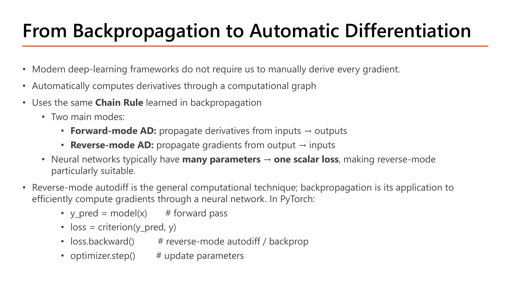
ข่าวดีของหน้านี้: "Modern deep-learning frameworks do not require us to manually derive every gradient" — เฟรมเวิร์กสมัยใหม่คำนวณอนุพันธ์ให้อัตโนมัติผ่าน computational graph โดยใช้ Chain Rule ตัวเดียวกับที่เราเพิ่งเรียน. เรายังต้องเข้าใจ backprop เพื่อ debug และเพื่อสอบ แต่ไม่ต้องหาอนุพันธ์ด้วยมือทุกครั้ง.
สไลด์แยก AD เป็นสองโหมดซึ่งเป็นจุดที่ข้อสอบชอบสลับ:
| โหมด | ทิศทาง | เหมาะเมื่อ |
|---|---|---|
| Forward-mode AD | propagate derivatives จาก inputs → outputs | input น้อย output เยอะ |
| Reverse-mode AD | propagate gradients จาก output → inputs | input (พารามิเตอร์) เยอะ output เป็นสเกลาร์ตัวเดียว |
เหตุผลที่ deep learning เลือก reverse-mode อยู่ในประโยคที่สไลด์ทำตัวหนา: "Neural networks typically have many parameters → one scalar loss, making reverse-mode particularly suitable." — ลองคิดเป็นตัวเลข: ถ้าโมเดลมีพารามิเตอร์ 1,000,000 ตัวและ loss 1 ตัว, forward-mode ต้องรัน 1,000,000 รอบ (รอบละหนึ่งพารามิเตอร์) ส่วน reverse-mode รันรอบเดียวได้ครบทุกอนุพันธ์. นี่คือเหตุผลเชิงประสิทธิภาพทั้งหมดของ backpropagation. สไลด์สรุปความสัมพันธ์ไว้ชัด: "Reverse-mode autodiff is the general computational technique; backpropagation is its application to efficiently compute gradients through a neural network" — reverse-mode AD คือเทคนิคทั่วไป ส่วน backprop คือการเอาเทคนิคนั้นมาใช้กับเครือข่ายประสาท.
y_pred = model(x) # forward pass
loss = criterion(y_pred, y)
loss.backward() # reverse-mode autodiff / backprop
optimizer.step() # update parameters| โค้ด | ทำอะไร |
|---|---|
y_pred = model(x) | Forward computation ทั้งเครือข่าย: ไล่ \(z^{[l]} = \theta^{[l]}a^{[l-1]},\ a^{[l]}=g(z^{[l]})\) จนถึง \(a^{[L]}\). ระหว่างทาง PyTorch แอบบันทึก computational graph ไว้ด้วย (จำว่าค่าไหนมาจากการดำเนินการอะไร) — นี่คือสิ่งที่ทำให้บรรทัดที่ 3 ทำงานได้. ผลลัพธ์เป็น tensor ขนาด (batch, จำนวน output node) |
loss = criterion(y_pred, y) | คำนวณ cost \(J\) จากค่าทำนายเทียบคำตอบจริง. criterion คือฟังก์ชัน loss ที่เลือกไว้ (เช่น BCELoss สำหรับ binary, CrossEntropyLoss สำหรับ multi-class ตาม §6). ผลลัพธ์เป็นสเกลาร์ตัวเดียว — ตรงกับ "one scalar loss" ในสไลด์ |
loss.backward() | ขั้น backward ทั้งหมดของ §4 รวบไว้ในบรรทัดเดียว: คำนวณ \(\delta^{(L)}\) แล้วไล่ย้อนหา \(\delta\) ทุกชั้น และเก็บ \(\partial J/\partial\theta\) ไว้ในช่อง .grad ของพารามิเตอร์แต่ละตัว. ยังไม่เปลี่ยนค่า \(\theta\) |
optimizer.step() | อัปเดต \(\theta := \theta - \alpha\,\partial J/\partial\theta\) โดยอ่านจากช่อง .grad ที่บรรทัดก่อนหน้าเติมไว้. \(\alpha\) คือ learning rate ที่ตั้งตอนสร้าง optimizer |
ผลลัพธ์ที่คาด: โค้ด 4 บรรทัดนี้ไม่พิมพ์อะไรออกมา — ผลของมันคือค่า loss (ตัวเลขเดียว ลดลงเรื่อยๆ ตามรอบ) และพารามิเตอร์ของ model ที่ถูกแก้ไขในที่ (in-place). สไลด์ไม่ได้แสดง output ของบล็อกนี้ จึงไม่มีตัวเลขให้อ้าง.
loss.backward() → optimizer.step(). ตัวลวงที่พบบ่อย: สลับ optimizer.step() ขึ้นก่อน loss.backward() (จะอัปเดตด้วย gradient เก่า), เรียก model.backward() แทน loss.backward() (backward เรียกจากสเกลาร์ loss เสมอ), หรือเขียน criterion(y, y_pred) สลับลำดับอาร์กิวเมนต์ (ตัวทำนายมาก่อนคำตอบจริง).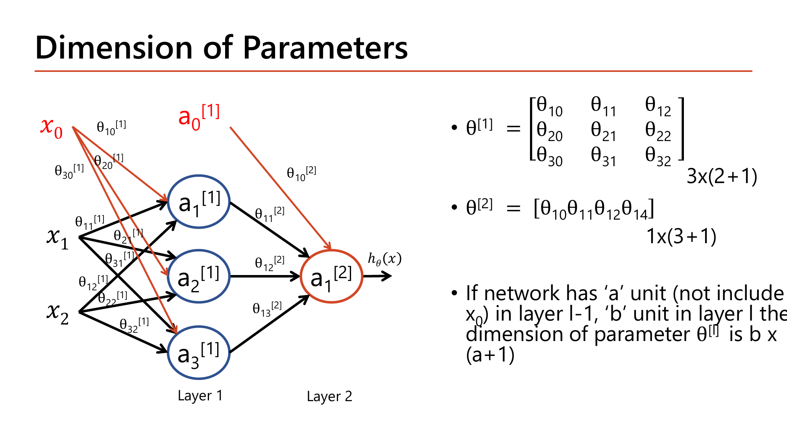
เครือข่ายในหน้านี้คือ input 2 → hidden 3 → output 1. สไลด์กางเมทริกซ์ออกมาให้เห็นทุกช่อง:
$$\theta^{[1]} = \begin{bmatrix}\theta_{10}&\theta_{11}&\theta_{12}\\\theta_{20}&\theta_{21}&\theta_{22}\\\theta_{30}&\theta_{31}&\theta_{32}\end{bmatrix}\ \ 3\times(2+1),\qquad \theta^{[2]} = \begin{bmatrix}\theta_{10}&\theta_{11}&\theta_{12}&\theta_{13}\end{bmatrix}\ \ 1\times(3+1)$$นับตามจริง: \(\theta^{[1]}\) มี 3 แถวเพราะ hidden มี 3 node และมี 3 คอลัมน์เพราะ input มี 2 ตัวบวก bias อีก 1; \(\theta^{[2]}\) มี 1 แถวเพราะ output มี 1 node และ 4 คอลัมน์เพราะ hidden 3 node บวก bias. สรุปเป็นกฎทั่วไปตามที่สไลด์เขียน: ถ้า layer \(l-1\) มี \(a\) unit (ไม่นับ \(x_0\)) และ layer \(l\) มี \(b\) unit แล้วมิติของ \(\theta^{[l]}\) คือ \(b\times(a+1)\).
จำนวนแถว = จำนวน node ที่รับของ; จำนวนคอลัมน์ = จำนวน node ที่ส่งของ + 1 ช่องสำหรับ bias
รวม \(30+11 = 41\) พารามิเตอร์
จาก 41 เป็น 151 ทั้งที่ hidden node รวมเพิ่มแค่เท่าตัว (10→20) — เพราะชั้นกลางเชื่อมกันแบบทุกคู่ \(10\times10=100\) เส้น ไม่ใช่ \(10+10\)
ข้อควรระวังในสไลด์: อาจารย์พิมพ์ \(\theta^{[2]} = [\theta_{10}\ \theta_{11}\ \theta_{12}\ \theta_{14}]\) — ตัวสุดท้ายควรเป็น \(\theta_{13}\) ไม่ใช่ \(\theta_{14}\) (เพราะ hidden มีแค่ 3 node ดังนั้น index ต้นทางวิ่งได้แค่ 0–3). นี่เป็น typo ของสไลด์; คำตอบที่ปลอดภัยในข้อสอบคือ index \(\theta_{10},\theta_{11},\theta_{12},\theta_{13}\) และขนาด \(1\times4\) ซึ่งสไลด์เองก็เขียนไว้ถูกว่า \(1\times(3+1)\).
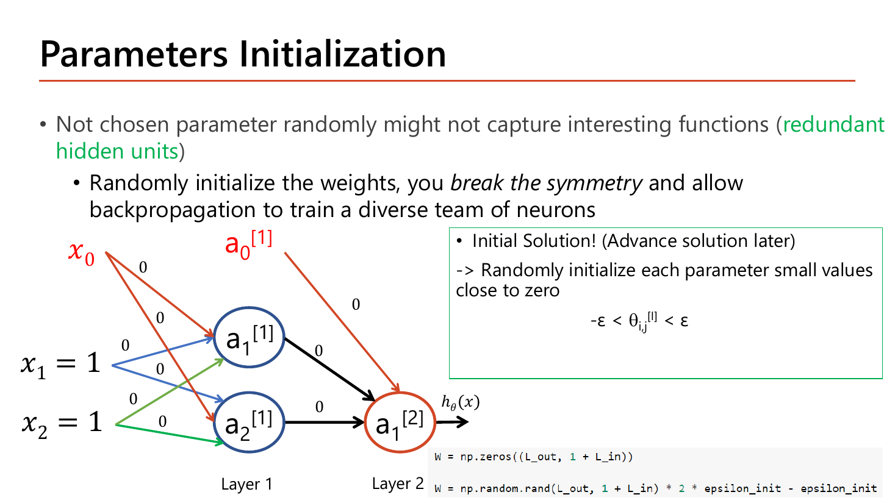
เครือข่ายในหน้านี้มี weight เป็น 0 ทุกเส้น — และนั่นคือหายนะ. สไลด์อธิบายว่าการไม่สุ่มพารามิเตอร์ "might not capture interesting functions" ซึ่งเกิดอาการที่เรียกว่า redundant hidden units — hidden unit ที่ซ้ำซ้อน คือมีหลาย node แต่ทุก node คำนวณสิ่งเดียวกันเป๊ะ จึงเท่ากับมี node เดียว. ทางแก้คือ "Randomly initialize the weights, you break the symmetry and allow backpropagation to train a diverse team of neurons".
มาดูว่ามันพังอย่างไรด้วยตัวเลขจริง (เครือข่ายเดียวกับหน้า 21: \(x=(1,1)\), \(y=1\), weight ทุกตัวเป็น 0, sigmoid, \(\alpha=0.5\)):
| รอบ | \(h_\theta(x)\) | \(a_1^{[1]}\) | \(a_2^{[1]}\) | \(\theta_{11}^{[2]}\) | \(\theta_{12}^{[2]}\) | \(\theta^{[1]}\) แถว 1 | \(\theta^{[1]}\) แถว 2 |
|---|---|---|---|---|---|---|---|
| 1 | 0.5000 | 0.5 | 0.5 | 0.125 | 0.125 | [0, 0, 0] | [0, 0, 0] |
| 2 | 0.5927 | 0.5 | 0.5 | 0.2268 | 0.2268 | [0.0064, 0.0064, 0.0064] | [0.0064, 0.0064, 0.0064] |
| 3 | 0.6643 | 0.5048 | 0.5048 | 0.3116 | 0.3116 | [0.0159, 0.0159, 0.0159] | [0.0159, 0.0159, 0.0159] |
| 5 | 0.7615 | 0.5201 | 0.5201 | 0.4455 | 0.4455 | [0.0382, 0.0382, 0.0382] | [0.0382, 0.0382, 0.0382] |
อ่านตารางนี้ให้ออก: ค่า \(h\) ก็ลู่เข้าหา 1 อยู่นะ ดูเหมือนเทรนได้ — แต่แถว 1 กับแถว 2 ของ \(\theta^{[1]}\) เท่ากันทุกช่องทุกรอบ และ \(\theta_{11}^{[2]} = \theta_{12}^{[2]}\) ตลอดกาล. เหตุผลเชิงกลไก: เมื่อ weight เท่ากัน \(z_1^{[1]} = z_2^{[1]}\) ⇒ \(a_1^{[1]} = a_2^{[1]}\) ⇒ \(\delta_1^{(1)} = \delta_2^{(1)}\) ⇒ gradient เท่ากัน ⇒ อัปเดตเท่ากัน ⇒ ยังเท่ากันต่อไป. hidden 2 node ทำงานได้เท่ากับ 1 node เป๊ะ — ต่อให้ใส่ 100 node ก็ยังได้ความสามารถเท่า 1 node. นี่คือความหมายของ "redundant hidden units" และของคำว่า symmetry ที่ต้อง "break".
ทางแก้ที่สไลด์เสนอ (ในกรอบ "Initial Solution! (Advance solution later)"): สุ่มพารามิเตอร์แต่ละตัวเป็นค่าเล็กๆ ใกล้ศูนย์ คือ \(-\varepsilon < \theta_{ij}^{[l]} < \varepsilon\). คำว่า "advance solution later" หมายถึงวิธีที่ดีกว่า (Xavier / He initialization) ที่จะสอนใน Lesson 5 — แค่ "เล็ก" อย่างเดียวยังไม่พอสำหรับเครือข่ายลึก.
W = np.zeros((L_out, 1 + L_in))
W = np.random.rand(L_out, 1 + L_in) * 2 * epsilon_init - epsilon_init| โค้ด | ทำอะไร |
|---|---|
np.zeros((L_out, 1 + L_in)) | สร้างเมทริกซ์ศูนย์ขนาด \(b\times(a+1)\) ตามสูตรหน้า 20 พอดี: L_out = จำนวน node ของ layer ปลายทาง (\(b\)), L_in = จำนวน node ต้นทาง (\(a\)), และ 1 + คือคอลัมน์ bias. บรรทัดนี้คือการจองที่ว่าง (placeholder) — ถ้าใช้ค่านี้เทรนจริงจะเจอปัญหา symmetry ตามตารางข้างบน |
np.random.rand(L_out, 1 + L_in) | สุ่มค่าจากการแจกแจงสม่ำเสมอในช่วง \([0,1)\) ขนาดเท่ากัน. ยังไม่ใช่คำตอบ เพราะค่าทั้งหมดเป็นบวก — ต้องแปลงช่วงก่อน |
* 2 * epsilon_init | ขยายช่วงจาก \([0,1)\) เป็น \([0,\ 2\varepsilon)\). ถ้า epsilon_init = 0.12 ก็ได้ \([0,\ 0.24)\) |
- epsilon_init | เลื่อนช่วงลงมาให้คร่อมศูนย์: \([-\varepsilon,\ \varepsilon)\) = \([-0.12,\ 0.12)\) ตรงกับเงื่อนไข \(-\varepsilon < \theta < \varepsilon\) ในสไลด์พอดี. ลำดับ \(\times2\varepsilon\) ก่อนแล้วค่อย \(-\varepsilon\) สลับกันไม่ได้ |
ผลลัพธ์ที่คาด (รันจริงด้วย L_in=2, L_out=10, epsilon_init=0.12, seed=1): W.shape = (10, 3), ค่าต่ำสุด \(-0.1200\) ค่าสูงสุด \(0.1124\) — กระจายอยู่ในช่วง \([-0.12, 0.12)\) และไม่มีสองแถวใดเหมือนกัน ⇒ symmetry ถูกทำลายเรียบร้อย.
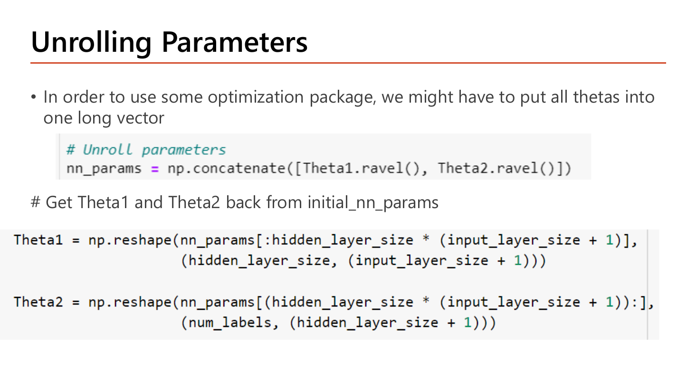
ปัญหาที่หน้านี้แก้: ไลบรารี optimizer แบบคลาสสิก (เช่น scipy.optimize.minimize) รับพารามิเตอร์เป็นเวกเตอร์ 1 มิติก้อนเดียว ไม่ใช่รายการของเมทริกซ์. แต่เครือข่ายของเรามี \(\theta^{[1]}\) ขนาด \(10\times3\) และ \(\theta^{[2]}\) ขนาด \(1\times11\) คนละรูป. ทางออกคือ "unroll" — คลี่ทุกเมทริกซ์เป็นแถวยาวแล้วต่อกัน ส่งเข้า optimizer และเมื่อต้องใช้งานก็ "roll back" กลับเป็นรูปเดิม.
# Unroll parameters
nn_params = np.concatenate([Theta1.ravel(), Theta2.ravel()])
# Get Theta1 and Theta2 back from initial_nn_params
Theta1 = np.reshape(nn_params[:hidden_layer_size * (input_layer_size + 1)],
(hidden_layer_size, (input_layer_size + 1)))
Theta2 = np.reshape(nn_params[(hidden_layer_size * (input_layer_size + 1)):],
(num_labels, (hidden_layer_size + 1)))| โค้ด | ทำอะไร |
|---|---|
Theta1.ravel() | คลี่เมทริกซ์ \(10\times3\) เป็นเวกเตอร์ยาว 30 โดยไล่ทีละแถว (row-major / C order ซึ่งเป็นค่าเริ่มต้นของ numpy). ravel ต่างจาก flatten ตรงที่พยายามคืน view ไม่ copy ถ้าทำได้ |
np.concatenate([...]) | ต่อเวกเตอร์สองอันเป็นอันเดียว: 30 + 11 = 41 ตัว. ลำดับสำคัญมาก — Theta1 ต้องมาก่อน Theta2 เพราะการ reshape กลับข้างล่างตัดช่วงตามลำดับนี้ |
nn_params[:hidden_layer_size * (input_layer_size + 1)] | ตัดช่วงแรก: \(10\times(2+1) = 30\) ตัวแรก = ข้อมูลของ Theta1. สังเกตว่าสูตรในวงเล็บคือสูตรมิติ \(b\times(a+1)\) จากหน้า 20 เป๊ะๆ |
np.reshape(..., (hidden_layer_size, (input_layer_size + 1))) | พับ 30 ตัวกลับเป็นรูป \((10, 3)\). ต้องใช้ลำดับ row-major เดียวกับตอน ravel ค่าจึงกลับเข้าช่องเดิม |
nn_params[(hidden_layer_size * (input_layer_size + 1)):] | ตัดช่วงที่เหลือ (ตัวที่ 31 เป็นต้นไป) = 11 ตัวของ Theta2. เครื่องหมาย : อยู่หลังตัวเลขคราวนี้ (ต่างจากบรรทัดบนที่อยู่หน้า) — สลับกันเมื่อไรได้ข้อมูลผิดก้อนทันที |
(num_labels, (hidden_layer_size + 1)) | พับกลับเป็น \((1, 11)\) โดย num_labels = จำนวน output node |
ผลลัพธ์ที่คาด (รันจริงด้วย input_layer_size=2, hidden_layer_size=10, num_labels=1): nn_params.shape = (41,); หลัง reshape กลับได้ Theta1.shape = (10, 3) และ Theta2.shape = (1, 11) ที่มีค่าเท่ากับต้นฉบับทุกช่อง (ตรวจด้วย np.allclose ได้ True ทั้งคู่).
np.random.rand(...) * epsilon_init เฉยๆ ⇒ ได้แต่ค่าบวก ไม่คร่อมศูนย์.(L_out, 1 + L_in) — "+1" อยู่กับ L_in เสมอ; (2) ลำดับ * 2 * epsilon_init - epsilon_init ห้ามสลับ; (3) ใน np.reshape ช่วง slice ต้องเป็น hidden_layer_size * (input_layer_size + 1) ไม่ใช่ hidden_layer_size * input_layer_size; (4) ravel() ของ Theta1 ต้องอยู่ก่อน Theta2 ใน np.concatenate.ตลอด §2–§4 เราเขียน \(g\) ไว้เฉยๆ โดยไม่ถามว่ามันคือฟังก์ชันอะไร. ตอนนี้ถึงเวลาแล้ว เพราะ \(g'\) เป็นตัวคูณอยู่ในสูตร \(\delta\) ของทุก layer — เลือก \(g\) ผิด gradient ตายทั้งเครือข่าย.
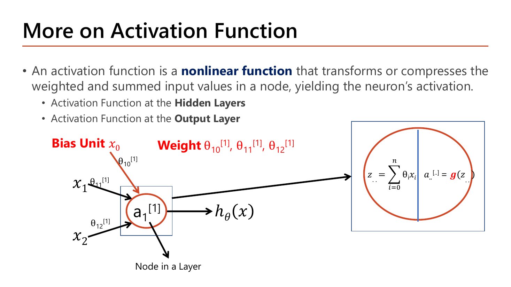
นิยามที่อาจารย์ทำสีไว้: activation function คือ nonlinear function ที่ "transforms or compresses the weighted and summed input values in a node, yielding the neuron's activation" — แปลง/บีบค่าที่รวมแบบถ่วงน้ำหนักมาแล้ว ให้กลายเป็น activation ของ neuron. คำว่า "compresses" อธิบายพฤติกรรมของ sigmoid/tanh ได้ดี: ไม่ว่า \(z\) จะเป็น 1,000 หรือ −1,000 ผลลัพธ์ถูกบีบให้อยู่ในช่วงแคบๆ เสมอ.
หน้านี้ซูมเข้าไปดูภายใน node หนึ่งตัวเพื่อแยกองค์ประกอบสามอย่างให้เห็นชัด: Bias Unit 𝑥0 คือ input พิเศษที่มีค่า 1 เสมอ, Weight θ10[1], θ11[1], θ12[1] คือตัวคูณของแต่ละเส้นที่เข้ามา (สามตัวเพราะมี bias + \(x_1\) + \(x_2\)) และ g (สไลด์ทำสีแดงตัวหนา) คือ activation. การคำนวณภายใน node เป็นสองจังหวะเสมอ:
$$z = \sum_{i=0}^{n}\theta_i x_i \qquad\text{แล้วจึง}\qquad a = g(z)$$ทำไมต้องมี bias unit: ถ้าไม่มี \(x_0\) สมการ \(z = \theta_{11}x_1 + \theta_{12}x_2\) จะถูกบังคับให้ผ่านจุดกำเนิดเสมอ — เมื่อ input เป็น 0 ทั้งหมด \(z\) ต้องเป็น 0 และ \(a = g(0) = 0.5\) ตายตัว. bias คือตัวเลื่อนเส้นแบ่ง ทำให้ node "มีความเห็นของตัวเอง" ได้แม้ไม่มี input. เปรียบเทียบกับสมการเส้นตรง \(y = mx + c\): bias คือ \(c\) ส่วน weight คือ \(m\) — ถ้าไม่มี \(c\) เส้นตรงทุกเส้นต้องลากผ่านจุด (0,0).
สไลด์แบ่ง activation ออกเป็นสองที่ใช้งานซึ่งใช้คนละเกณฑ์ในการเลือก และนี่คือโครงของ §5 ถึง §6 ทั้งหมด:
sigmoid, tanh, softmax และ softplus ทั้งหมดสร้างจาก \(e^{x}\) ถ้าไม่คุ้นกับมันจะอ่านสูตรไม่ออกเลย.
\(e\) คือค่าคงที่ \(2.71828\dots\) (เหมือน \(\pi\) แต่คนละตัว). \(e^{x}\) แปลว่า "เอา \(e\) มายกกำลัง \(x\)" ค่าที่ควรจำ:
| \(x\) | −3 | −1 | 0 | 1 | 2 | 3 |
|---|---|---|---|---|---|---|
| \(e^{x}\) | 0.0498 | 0.3679 | 1 | 2.7183 | 7.3891 | 20.086 |
สมบัติสามข้อที่ใช้ตลอดบทนี้: (1) \(e^{x} > 0\) เสมอ ไม่ว่า \(x\) จะติดลบแค่ไหน — นี่คือเหตุผลที่ softmax ใช้มันแปลงคะแนนติดลบให้เป็นความน่าจะเป็นได้; (2) \(e^{0}=1\); (3) \(e^{-x} = 1/e^{x}\) เช่น \(e^{-2} = 1/7.3891 = 0.1353\).
ลองคำนวณ sigmoid ด้วยมือ: \(g(2) = \dfrac{1}{1+e^{-2}} = \dfrac{1}{1+0.1353} = \dfrac{1}{1.1353} = 0.8808\) ✓ (ตรงกับตัวเลขใน §3). และฟังก์ชันผกผันของมันคือ \(\ln\) (natural log) ที่ใช้ใน cross-entropy: \(\ln(e^{x}) = x\).
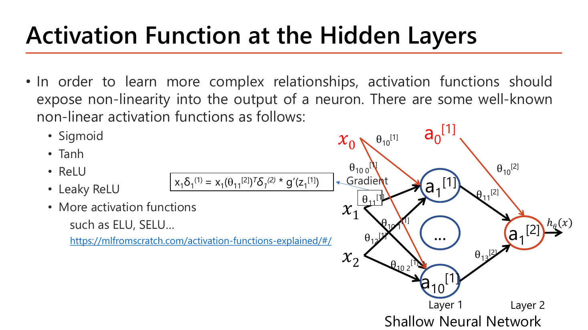
เหตุผลที่ hidden layer ต้องใช้ฟังก์ชันไม่เชิงเส้น สไลด์เขียนไว้ตรงๆ: "In order to learn more complex relationships, activation functions should expose non-linearity into the output of a neuron" (จะพิสูจน์ใน §5C). รายการที่สไลด์ให้มี 4 ตัวหลัก + กลุ่มขยาย: Sigmoid, Tanh, ReLU, Leaky ReLU และ "More activation functions such as ELU, SELU…".
แต่สิ่งที่สำคัญกว่ารายชื่อคือสูตร gradient ที่อาจารย์ยกมากำกับไว้ในหน้าเดียวกัน เพราะมันคือเหตุผลว่าทำไมการเลือก activation ถึงอยู่ในบท backpropagation ไม่ใช่บทอื่น:
$$x_1\delta_1^{(1)} = x_1\left(\theta_{11}^{[2]}\right)^{\!\top}\delta_1^{(2)} * g'\!\left(z_1^{[1]}\right)$$นี่คือ gradient ของ \(\theta_{11}^{[1]}\) ที่เราพิสูจน์ไปแล้วใน §2 — และ \(g'\) นั่งอยู่เป็นตัวคูณตัวหนึ่งในนั้น. ตีความเป็นตัวเลข: ถ้าใช้ sigmoid และ \(z_1^{[1]}\) บังเอิญเป็น 4, ค่า \(g'(4) = 0.0177\) ⇒ gradient ของ weight ตัวนี้ถูกหั่นเหลือ 1.77% ทันทีในชั้นเดียว. ถ้าใช้ ReLU ที่ \(z=4\), \(g'=1\) ⇒ gradient ผ่านไปเต็มๆ. การเลือก activation จึงคือการเลือกว่าจะให้ gradient ไหลย้อนได้ดีแค่ไหน ไม่ใช่แค่เรื่องรูปร่างกราฟสวยงาม.
เครือข่ายตัวอย่างในหน้านี้คือ Shallow Neural Network: input 2 → hidden 10 (\(a_1^{[1]}\) ถึง \(a_{10}^{[1]}\)) → output 1 ซึ่งเป็นเครือข่ายเดียวกับที่จะใช้ในแบบฝึกหัดหน้า 47–48 และในโจทย์นับพารามิเตอร์หน้า 42. คำว่า "shallow" (ตื้น) หมายถึงมี hidden layer ชั้นเดียว ตรงข้ามกับ "deep" ที่มีหลายชั้น.
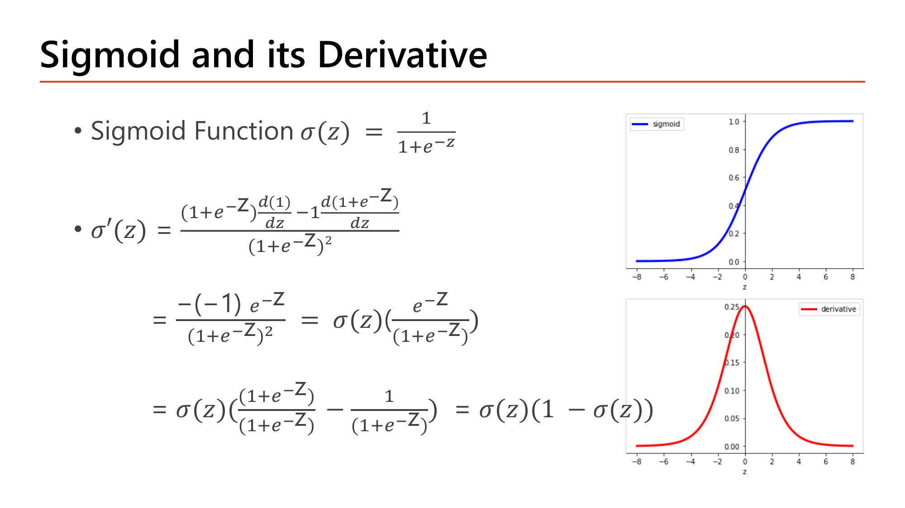
สไลด์หน้านี้ไล่พิสูจน์ \(\sigma'\) ทีละบรรทัดจนได้รูปสวยงาม \(\sigma(z)(1-\sigma(z))\). เหตุผลที่อาจารย์ยอมเสียทั้งหน้าให้การพิสูจน์นี้: รูปสุดท้ายทำให้คำนวณอนุพันธ์ได้จากค่า \(a\) ที่ forward คำนวณไว้แล้ว ไม่ต้องคำนวณ \(e^{-z}\) ใหม่ — ประหยัดมหาศาลเมื่อมี node เป็นล้าน.
\(u' = 0\) (อนุพันธ์ของค่าคงที่) และ \(v' = -e^{-z}\) (chain rule: \(\frac{d}{dz}e^{-z} = e^{-z}\times(-1)\)):
$$\sigma'(z) = \frac{(1+e^{-z})\cdot 0 - 1\cdot(-e^{-z})}{(1+e^{-z})^2} = \frac{e^{-z}}{(1+e^{-z})^2}$$เขียน \(e^{-z} = (1+e^{-z}) - 1\) แล้วแยกเศษ:
$$\frac{e^{-z}}{1+e^{-z}} = \frac{(1+e^{-z}) - 1}{1+e^{-z}} = 1 - \frac{1}{1+e^{-z}} = 1-\sigma(z)$$สูตร: \(\sigma(2)=0.8808\) ⇒ \(\sigma'(2) = 0.8808\times0.1192 = 0.10499\). ลองขยับจริง: \(\sigma(2.001) = 0.880902\) ⇒ \((0.880902-0.880797)/0.001 = 0.105\) ✓
| \(z\) | −4 | −2 | 0 | 2 | 4 |
|---|---|---|---|---|---|
| \(\sigma(z)\) | 0.018 | 0.119 | 0.5 | 0.881 | 0.982 |
| \(\sigma'(z)\) | 0.0177 | 0.105 | 0.25 | 0.105 | 0.0177 |
อนุพันธ์ของ sigmoid มีค่าสูงสุดเพียง 0.25 ที่ \(z=0\) (เพราะ \(0.5\times0.5 = 0.25\) และผลคูณ \(a(1-a)\) ใหญ่สุดเมื่อ \(a=0.5\)) และหดเร็วเมื่อ \(|z|\) โต — ที่ \(z=\pm2\) เหลือ 0.105 ซึ่งต่ำกว่าครึ่งของยอดแล้ว. ถ้า sigmoid ต่อกัน \(L\) layer gradient จะถูกคูณด้วยตัวเลข \(\le0.25\) ซ้ำ \(L\) ครั้ง — เช่น 10 layer ⇒ \(0.25^{10} \approx 9.5\times10^{-7}\) คือเกือบหนึ่งในล้าน. นี่คือรากของ vanishing gradient ที่ Lesson 5 จะลงลึก.
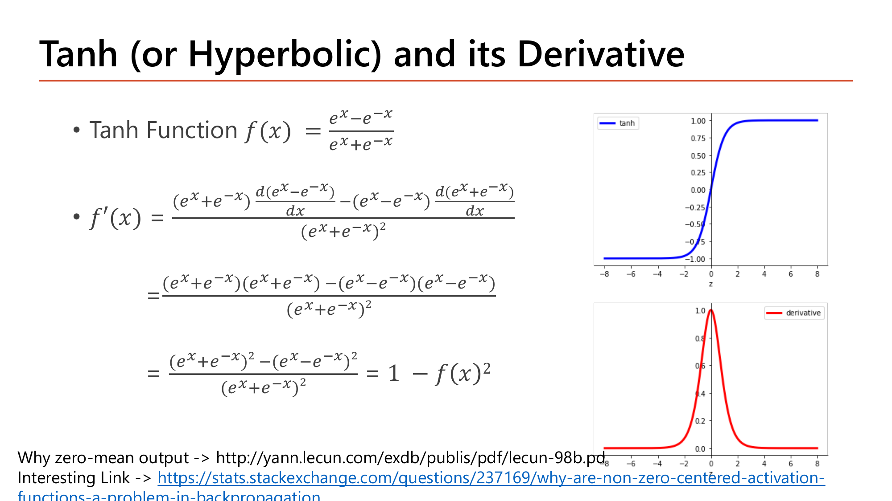
สไลด์ใช้ quotient rule แบบเดียวกับ sigmoid แต่เศษและส่วนเป็นฟังก์ชันทั้งคู่ จึงยาวกว่า. ไล่ตามทุกบรรทัด:
\(\frac{d}{dx}e^{-x} = -e^{-x}\) ดังนั้น \(u' = e^{x}-(-e^{-x}) = e^{x}+e^{-x} = v\) และ \(v' = e^{x}+(-e^{-x}) = e^{x}-e^{-x} = u\)
ยอดของอนุพันธ์คือ 1 ที่ \(x=0\) — สูงกว่า sigmoid 4 เท่า ⇒ gradient ไหลย้อนได้ดีกว่าในชั้นต้นๆ. แต่ดูค่าที่ \(x=2\): tanh เหลือ 0.0707 ส่วน sigmoid เหลือ 0.105 — tanh หดเร็วกว่าเมื่อออกจากศูนย์. สรุปคือ tanh ดีกว่าตรงกลาง แต่ทั้งคู่ตายเหมือนกันที่ปลาย.
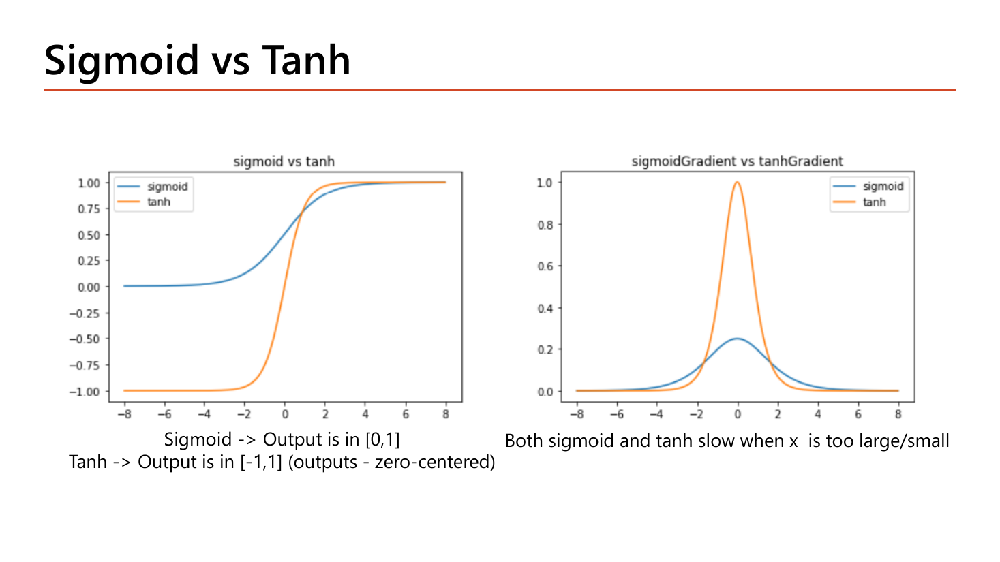
อาจารย์สรุปการเปรียบเทียบไว้เป็นสามบรรทัดใต้กราฟ: "Sigmoid → Output is in [0,1]", "Tanh → Output is in [-1,1] (outputs - zero-centered)", และ "Both sigmoid and tanh slow when x is too large/small".
อ่านกราฟคู่ขวา (กราฟอนุพันธ์) ด้วยตัวเลขจริง: ที่ \(x=0\) เส้น tanh แตะ 1.00 ส่วนเส้น sigmoid แตะแค่ 0.25 — ต่างกัน 4 เท่า. เลยออกไปที่ \(|x|\ge4\) ทั้งสองเส้นแบนติดศูนย์ (sigmoid 0.0177, tanh 0.0013) ⇒ ตรงนั้นคือ "dead zone" ที่ gradient แทบไม่มี. นี่คือความหมายเชิงตัวเลขของคำว่า "slow when x is too large/small" — ไม่ใช่ว่าโค้ดทำงานช้า แต่คือการเรียนรู้ช้า เพราะ gradient เล็กจนแทบไม่ขยับ weight.
คำว่า "zero-centered" ของ tanh หมายความว่าอะไร: output ของ tanh กระจายรอบ 0 (ได้ทั้งบวกและลบ) ส่วน sigmoid ให้ค่าบวกเสมอ (0 ถึง 1) มีค่าเฉลี่ยราว 0.5. ฟังดูเป็นเรื่องเล็ก แต่หน้าถัดไปอธิบายว่ามันทำให้การเทรนช้าลงจริงๆ.
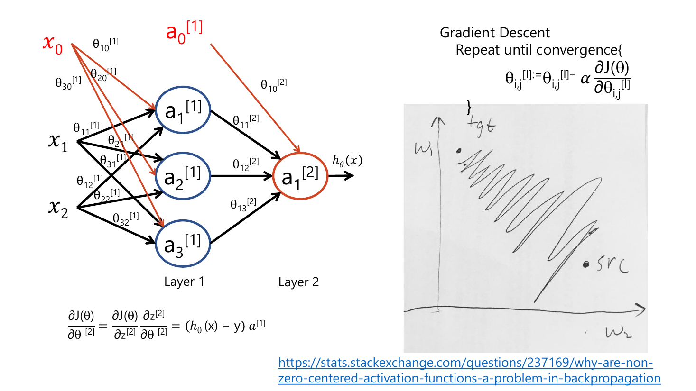
หน้านี้วางสามอย่างไว้ด้วยกัน: สูตร gradient ของ layer 2, กฎอัปเดต gradient descent, และภาพวาดมือของเส้นทางที่วิ่งซิกแซกจากจุด src ไปจุด tgt ในระนาบ \((w_1, w_2)\). ทั้งสามอย่างเชื่อมกันเป็นเหตุผลเดียว ดังนี้:
จากสูตร \(\dfrac{\partial J}{\partial\theta^{[2]}} = \big(h_\theta(x)-y\big)a^{[1]}\) สังเกตว่า gradient ของ weight ทุกเส้นที่เข้า node เดียวกันมี \((h-y)\) เป็นตัวคูณร่วม ต่างกันแค่ \(a_j^{[1]}\). ถ้า activation เป็น sigmoid ⇒ \(a_j^{[1]} > 0\) ทุกตัว ⇒ gradient ของ weight ทุกตัวในแถวนั้นมีเครื่องหมายเดียวกันเสมอ (ตามเครื่องหมายของ \(h-y\)).
ลองกับตัวเลขจาก §3: \(\delta^{(2)} = -0.293\), \(a^{[1]} = (1,\ 0.8808,\ 0.8808)\) ⇒ gradient = \((-0.293,\ -0.258,\ -0.258)\) — ลบทั้งสามตัว ⇒ weight ทุกตัวเพิ่มพร้อมกัน. รอบถัดไปถ้าทำนายเกิน gradient จะบวกทั้งแถว ⇒ weight ทุกตัวลดพร้อมกัน. ผลคือทิศทางที่เดินได้มีแค่ "ขึ้นทั้งคู่" หรือ "ลงทั้งคู่" (ควอดรันต์ที่ 1 กับ 3 ของระนาบ \((w_1,w_2)\)) — แต่ถ้าจุดหมายอยู่ในทิศ "\(w_1\) ขึ้น \(w_2\) ลง" เราไปตรงๆ ไม่ได้ ต้องเดินซิกแซกสลับไปมาทีละก้าวเล็กๆ ซึ่งก็คือเส้นทางที่วาดไว้ในภาพ. ถ้าใช้ tanh ที่ \(a\) มีทั้งบวกและลบ เครื่องหมายของ gradient แต่ละตัวอิสระต่อกัน ⇒ เดินเฉียงตรงไปหาเป้าได้ทันที.
activation ที่ให้ค่าบวกล้วนบังคับให้ weight ทุกตัวในแถวเดียวกันขยับทิศเดียวกัน — เหมือนพายเรือที่ทุกคนต้องพายข้างเดียวกันเสมอ จะเลี้ยวก็ต้องสลับไปมา
สไลด์อ้างลิงก์ StackExchange ("why are non-zero-centered activation functions a problem in backpropagation") และหน้า 26 อ้างบทความของ LeCun ("Why zero-mean output") เป็นแหล่งอ่านต่อ — นี่คือเหตุผลทั้งหมดที่ตารางหน้า 32 ให้ "outputs - zero-centered" เป็นข้อดีของ tanh และ "outputs - not zero-centered" เป็นข้อเสียของ sigmoid.
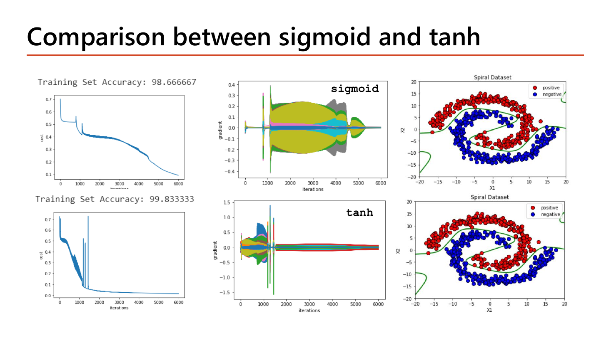
อาจารย์รันเครือข่ายเดียวกันบนชุดข้อมูล Spiral สองครั้ง เปลี่ยนแค่ activation ของ hidden layer แล้ววางผลเทียบกัน. ตัวเลขที่ต้องจำ:
# Comparison between sigmoid and tanh (Spiral dataset, network เดียวกัน, 6000 iterations)
sigmoid # Training Set Accuracy: 98.666667 gradient อยู่ในช่วงประมาณ -0.4 ถึง 0.4
tanh # Training Set Accuracy: 99.833333 gradient อยู่ในช่วงประมาณ -1.5 ถึง 1.5| โค้ด | ทำอะไร |
|---|---|
sigmoid | ป้ายกำกับของการรันชุดแรก — hidden layer ใช้ \(g(z)=1/(1+e^{-z})\). ผลที่ได้: Training Set Accuracy: 98.666667 เส้น cost ลงช้าแบบเป็นขั้นบันได และยังไม่แบนสนิทเมื่อถึงรอบที่ 6000 |
# Training Set Accuracy: 98.666667 | ความแม่นบน training set (หน่วยเป็นเปอร์เซ็นต์) ของการรันด้วย sigmoid. ถ้า training set มี 600 จุด นี่คือทายผิด 8 จุด |
tanh | ป้ายกำกับของการรันชุดที่สอง — เปลี่ยนเฉพาะ activation ของ hidden layer เป็น \(\tanh\) ที่เหลือเหมือนเดิมทุกอย่าง. ผลที่ได้: Training Set Accuracy: 99.833333 เส้น cost ดิ่งลงเกือบสุดตั้งแต่ก่อนรอบที่ 2000 |
# Training Set Accuracy: 99.833333 | ความแม่นของการรันด้วย tanh — ทายผิดเพียง 1 จุดจาก 600 จุด. ดีขึ้นจาก sigmoid ประมาณ 1.17 จุดเปอร์เซ็นต์ โดยไม่แตะโครงสร้างเครือข่ายเลย |
ผลลัพธ์ที่คาด (อ่านจากสไลด์): sigmoid = 98.666667, tanh = 99.833333. และกราฟ gradient ก็ยืนยันการพิสูจน์ในหัวข้อก่อนหน้าพอดี: gradient ของ sigmoid หนาแน่นอยู่ในช่วงแคบ \(\pm0.4\) ในขณะที่ tanh แกว่งถึง \(\pm1.5\) — อนุพันธ์ยอด 1 เทียบกับยอด 0.25 แสดงตัวออกมาเป็นขนาด gradient จริงๆ และ gradient ที่ใหญ่กว่าก็แปลว่า weight ขยับได้เร็วกว่าในแต่ละรอบ ซึ่งเห็นได้จากเส้น cost ของ tanh ที่ดิ่งเร็วกว่า.
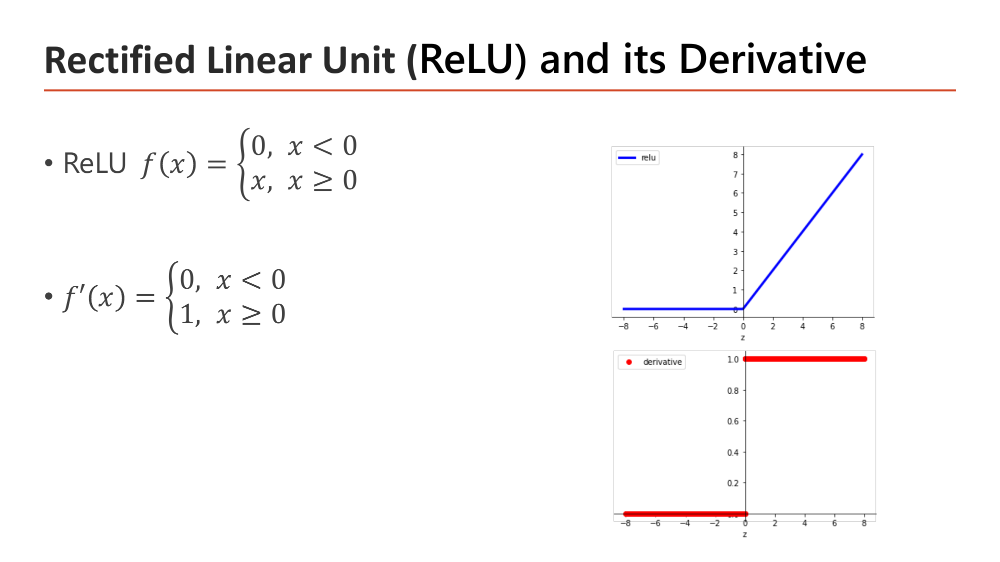
=0, piecewise linear, with derivative f'(x)=0 for x<0 and f'(x)=1 for x>=0, a simple step-like derivative">ReLU คือฟังก์ชันที่ง่ายที่สุดในบทนี้ — "ถ้าติดลบให้เป็น 0 ถ้าไม่ติดลบก็ปล่อยผ่าน":
$$f(x) = \begin{cases}0, & x < 0\\ x, & x \ge 0\end{cases}\qquad\qquad f'(x) = \begin{cases}0, & x < 0\\ 1, & x \ge 0\end{cases}$$ลองใส่ตัวเลข: \(f(-3)=0\), \(f(-0.1)=0\), \(f(0)=0\), \(f(2)=2\), \(f(1000)=1000\). และอนุพันธ์: \(f'(-3)=0\), \(f'(2)=1\), \(f'(1000)=1\).
ทำไมอนุพันธ์ที่เป็น 1 คงที่ถึงเปลี่ยนเกม: ย้อนกลับไปที่สูตร \(\delta^{(l-1)} = (\theta^{[l]})^\top\delta^{(l)} * g'(z^{[l-1]})\). ถ้า \(g'=1\) เสมอในฝั่งบวก ตัวคูณนี้ไม่หั่น gradient เลย — คูณ 1 กี่ครั้งก็ยังเป็นตัวมันเอง. เทียบกันตรงๆ กับ sigmoid ในเครือข่าย 10 layer: sigmoid ให้ \(0.25^{10} = 9.5\times10^{-7}\) ส่วน ReLU (สมมติทุก node อยู่ฝั่งบวก) ให้ \(1^{10} = 1\) — ต่างกันประมาณหนึ่งล้านเท่า. นี่คือเหตุผลตัวเลขที่ ReLU ทำให้เทรนเครือข่ายลึกได้จริง.
ข้อเสียที่มากับความเรียบง่าย: ในฝั่ง \(x<0\) อนุพันธ์เป็น 0 สนิท ⇒ ถ้า node หนึ่งบังเอิญมี \(z<0\) สำหรับข้อมูลทุกตัว มันจะไม่ได้รับ gradient เลยตลอดกาล (เรียกว่า "dying ReLU"). ตารางหน้า 32 เรียกอาการนี้ว่า "information loss on \(x<0\)". อีกข้อคือ output ไม่มีขอบบน (\([0,\infty]\)) ซึ่งตารางเรียกว่า "output can be Infinite".
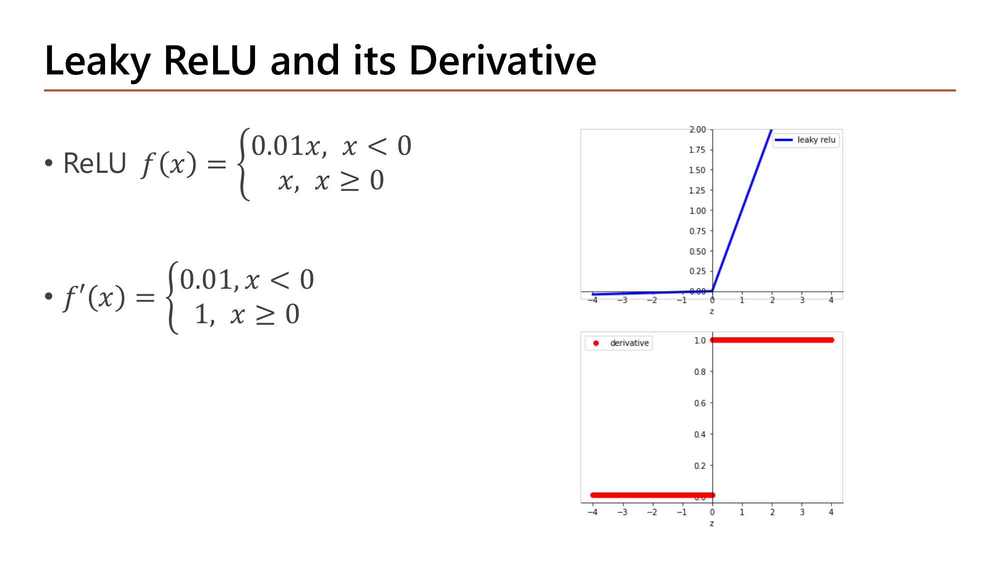
=0 with its derivative f'(x)=0.01 for x<0 and 1 for x>=0, so the negative side has a small non-zero slope instead of being completely flat">Leaky ReLU แก้ปัญหา "ฝั่งลบตาย" ด้วยการให้ความชันเล็กๆ แทนที่จะเป็น 0 สนิท:
$$f(x) = \begin{cases}0.01x, & x < 0\\ x, & x \ge 0\end{cases}\qquad\qquad f'(x) = \begin{cases}0.01, & x < 0\\ 1, & x \ge 0\end{cases}$$ตัวเลขเทียบกัน: ที่ \(x=-5\) ReLU ให้ \(f=0,\ f'=0\) (ตายสนิท) ส่วน Leaky ReLU ให้ \(f=-0.05,\ f'=0.01\) — เล็กมากแต่ไม่ใช่ศูนย์ ⇒ ยังมี gradient ไหลกลับผ่านได้ ⇒ node มีโอกาสฟื้นกลับมาใช้งานได้. ราคาที่จ่ายคือ output ขยายออกทั้งสองฝั่ง \([-\infty, \infty]\) ซึ่งตารางหน้า 32 ระบุเป็นข้อเสีย "output can be Infinite".
ReLU ปิดประตูฝั่งลบสนิท; Leaky ReLU แง้มประตูไว้ 1% เพื่อให้ gradient เล็ดลอดกลับมาได้
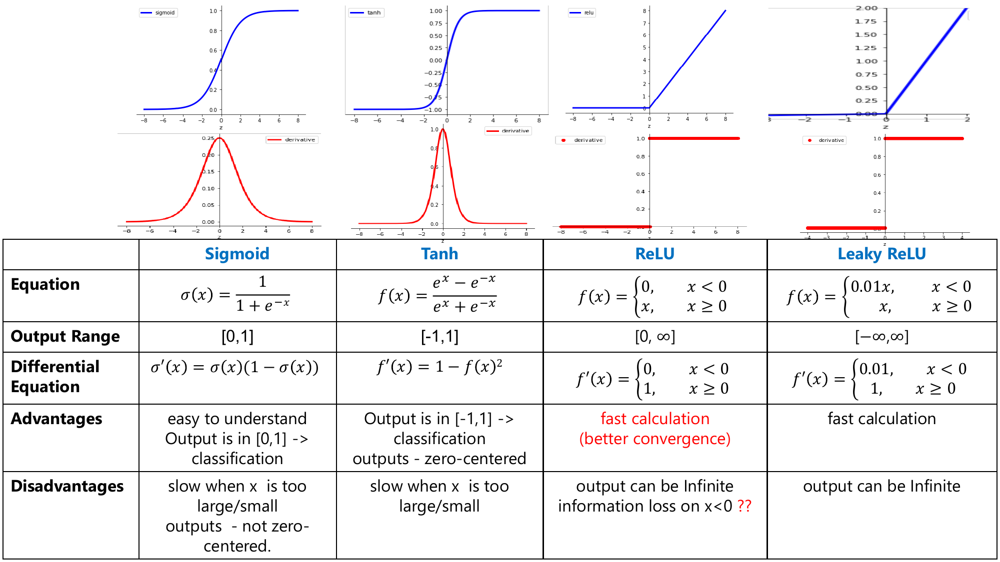
นี่คือตารางเดียวกับในสไลด์ ถอดออกมาเป็นข้อความให้อ่านได้โดยไม่ต้องเพ่งรูป (ข้อความในช่องเป็นคำของอาจารย์):
| Sigmoid | Tanh | ReLU | Leaky ReLU | |
|---|---|---|---|---|
| Equation | \(\sigma(x)=\dfrac{1}{1+e^{-x}}\) | \(f(x)=\dfrac{e^{x}-e^{-x}}{e^{x}+e^{-x}}\) | \(f(x)=\begin{cases}0,&x<0\\x,&x\ge0\end{cases}\) | \(f(x)=\begin{cases}0.01x,&x<0\\x,&x\ge0\end{cases}\) |
| Output Range | [0, 1] | [−1, 1] | [0, ∞] | [−∞, ∞] |
| Differential Equation | \(\sigma'(x)=\sigma(x)(1-\sigma(x))\) | \(f'(x)=1-f(x)^2\) | \(f'(x)=\begin{cases}0,&x<0\\1,&x\ge0\end{cases}\) | \(f'(x)=\begin{cases}0.01,&x<0\\1,&x\ge0\end{cases}\) |
| Advantages | easy to understand; Output is in [0,1] → classification | Output is in [-1,1] → classification; outputs - zero-centered | fast calculation (better convergence) | fast calculation |
| Disadvantages | slow when x is too large/small; outputs - not zero-centered | slow when x is too large/small | output can be Infinite; information loss on x<0 (??) | output can be Infinite |
ข้อดีของ ReLU ที่อาจารย์ทำสีแดงไว้ช่องเดียวในตารางทั้งตารางคือ fast calculation (better convergence) — คำนวณเร็ว จึงลู่เข้าเร็วกว่า. คำว่า "เร็ว" มีสองความหมายซ้อนกัน: (1) เร็วเชิงเครื่อง — ReLU คือการเทียบกับ 0 หนึ่งครั้ง ไม่ต้องคำนวณ \(e^{-x}\) ซึ่งเป็นการยกกำลังที่แพงกว่ามาก; (2) เร็วเชิงการเรียนรู้ — เพราะ \(g'=1\) ไม่หั่น gradient จึงเดินลงเขาได้ก้าวใหญ่กว่า ตามที่เห็นในกราฟ cost หน้า 34 ที่ ReLU ลู่เข้าภายใน ~1000 รอบขณะที่ sigmoid/tanh ใช้หลายพันรอบ.
จุดที่อาจารย์เองก็ตั้งข้อสงสัยไว้: ในช่อง Disadvantages ของ ReLU มีข้อความ "information loss on x<0" ตามด้วยเครื่องหมายคำถามสีแดง "??" — อ่านได้ว่าอาจารย์กำลังบอกว่าข้อเสียข้อนี้ยังถกเถียงได้: การตัดค่าลบทิ้งดูเหมือนสูญเสียข้อมูล แต่ในทางปฏิบัติมันคือกลไกที่ทำให้เครือข่าย "เลือกเปิดเฉพาะบาง node" (sparsity) ซึ่งมักช่วยมากกว่าทำร้าย. คำตอบที่ปลอดภัยในข้อสอบ: ระบุตามตารางว่าเป็นข้อเสียที่สไลด์เขียนไว้ แต่รู้ด้วยว่าในทางปฏิบัติ ReLU ยังเป็น state of the art (หน้า 33).
ข้อสังเกตที่ควรเห็นจากตาราง: ช่อง Advantages ของ sigmoid และ tanh พูดถึง "ช่วง output เหมาะกับ classification" (คุณสมบัติของค่าที่ออกมา) ส่วนของ ReLU/Leaky ReLU พูดถึง "fast calculation" (คุณสมบัติของการคำนวณ) — สองตระกูลนี้เก่งคนละด้าน จึงเป็นที่มาของหลักการเลือกว่า hidden layer ใช้ตระกูล ReLU, output layer ใช้ sigmoid/softmax ซึ่งจะสรุปใน §6.
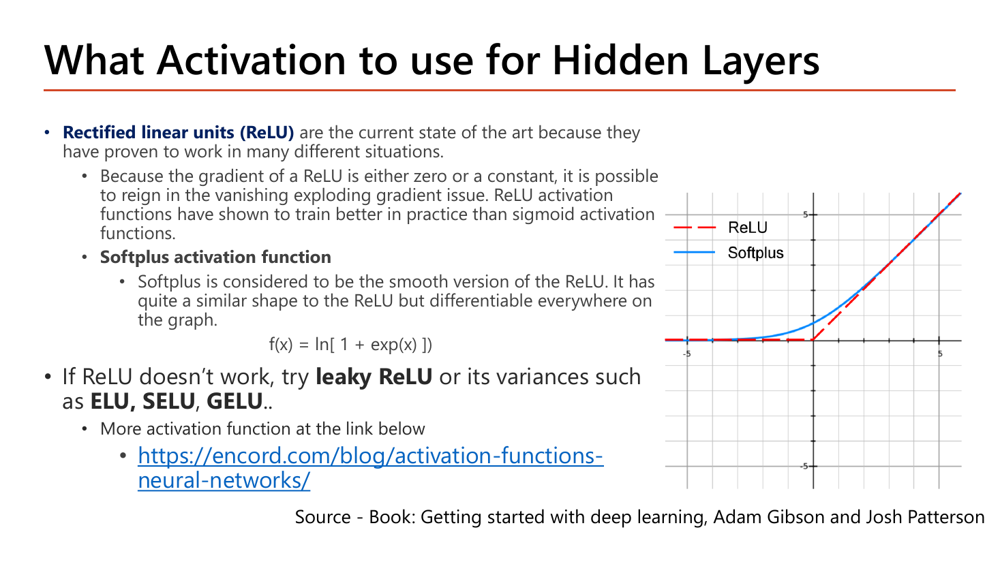
คำแนะนำหลักที่อาจารย์ทำสีไว้: • Rectified linear units (ReLU) "are the current state of the art because they have proven to work in many different situations" — ReLU คือมาตรฐานปัจจุบันของ hidden layer. เหตุผลเชิงกลไกที่สไลด์ให้: "Because the gradient of a ReLU is either zero or a constant, it is possible to reign in the vanishing exploding gradient issue. ReLU activation functions have shown to train better in practice than sigmoid activation functions."
แกะประโยคนี้ให้เป็นตัวเลข: อนุพันธ์ของ ReLU มีได้แค่ 0 หรือ 1 — ไม่มีค่ากลางๆ อย่าง 0.25 หรือ 0.0177. ผลคือเมื่อคูณต่อกันหลายชั้น ผลคูณเป็นได้แค่ 0 (ทางตัน) หรือ 1 (ผ่านเต็ม) ไม่มีการ "หดทีละนิดจนหายไป" แบบ \(0.25^{10}\) และไม่มีการ "โตทีละนิดจนระเบิด" แบบตัวคูณ > 1 ⇒ คุมได้ทั้ง vanishing และ exploding gradient ตามที่สไลด์ว่า.
Softplus — สไลด์เสนอเป็นรุ่นเรียบของ ReLU: "Softplus is considered to be the smooth version of the ReLU. It has quite a similar shape to the ReLU but differentiable everywhere on the graph."
$$f(x) = \ln\big[1 + \exp(x)\big]$$ลองตัวเลขเทียบกับ ReLU เพื่อดูว่า "smooth" แปลว่าอะไร: ที่ \(x=-3\) ReLU ให้ 0 พอดี Softplus ให้ \(\ln(1+0.0498) = 0.0486\); ที่ \(x=0\) ReLU ให้ 0 Softplus ให้ \(\ln 2 = 0.693\); ที่ \(x=2\) ReLU ให้ 2 Softplus ให้ \(\ln(1+7.389) = 2.127\). เห็นได้ว่า Softplus เกาะติด ReLU ที่ปลายทั้งสองข้าง แต่โค้งมนตรงมุมหัก \(x=0\) ซึ่งเป็นจุดเดียวที่ ReLU หาอนุพันธ์ไม่ได้ทางคณิตศาสตร์ (ความชันซ้ายเป็น 0 ความชันขวาเป็น 1 ไม่เท่ากัน) — Softplus จึง "differentiable everywhere" ตามที่สไลด์ว่า. ในทางปฏิบัติ ReLU ยังชนะเพราะเร็วกว่ามาก และปัญหามุมหักที่ \(x=0\) เป๊ะๆ แทบไม่เกิดกับเลขทศนิยมจริง.
ถ้า ReLU ไม่เวิร์ค: สไลด์แนะให้ลอง leaky ReLU หรือญาติของมันคือ ELU, SELU, GELU (สไลด์เขียนว่า "or its variances such as ELU, SELU, GELU..") พร้อมลิงก์อ่านต่อที่ encord.com. ทั้งสามตัวนี้สไลด์ไม่ได้ให้สูตร — ข้อสอบจึงน่าจะถามแค่ระดับ "รู้จักชื่อและรู้ว่าเป็นทางเลือกเมื่อ ReLU มีปัญหา". ลำดับที่ควรจำ: ReLU ก่อนเสมอ → ถ้ามีปัญหา (เช่น node ตายเยอะ) ค่อยไป leaky ReLU → แล้วจึง ELU/SELU/GELU. แหล่งอ้างอิงของหน้านี้คือหนังสือ Getting started with deep learning ของ Adam Gibson และ Josh Patterson.
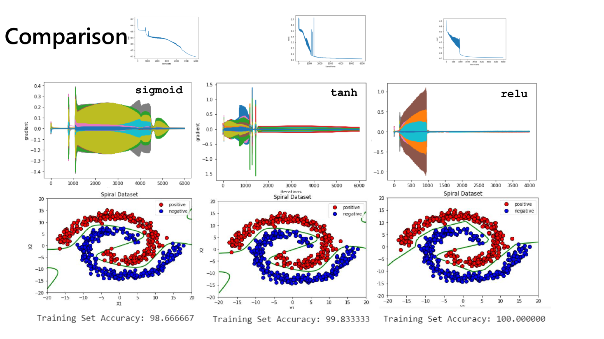
หน้านี้ขยายการทดลองของหน้า 29 โดยเพิ่ม relu เข้ามาเป็นคอลัมน์ที่สาม ใช้ชุดข้อมูล Spiral เดียวกัน:
# Comparison: same network on the Spiral dataset, only the hidden activation changes
sigmoid # Training Set Accuracy: 98.666667 (6000 iterations, gradient ~ -0.4 .. 0.4)
tanh # Training Set Accuracy: 99.833333 (6000 iterations, gradient ~ -1.5 .. 1.5)
relu # Training Set Accuracy: 100.000000 (4000 iterations, gradient ~ -1.0 .. 1.0)| โค้ด | ทำอะไร |
|---|---|
sigmoid | คอลัมน์ที่ 1 — ผลเดิมจากหน้า 29: 98.666667%. เส้น cost ยังไม่แบนสนิทเมื่อครบ 6000 รอบ และเส้นแบ่งคลาสบนภาพ Spiral ยังเก็บหางเกลียวด้านนอกได้ไม่หมด |
tanh | คอลัมน์ที่ 2 — 99.833333% ด้วยจำนวนรอบเท่ากัน. gradient แกว่งกว้างที่สุดในสามตัว (\(\pm1.5\)) สอดคล้องกับอนุพันธ์ยอด 1.0 ของมัน |
relu | คอลัมน์ที่ 3 — 100.000000% และแกนนอนของกราฟหยุดที่ 4000 รอบ ไม่ใช่ 6000 กล่าวคือได้คะแนนเต็มโดยใช้รอบน้อยกว่าอีกสองตัวหนึ่งในสาม — นี่คือ "better convergence" ที่ตารางหน้า 32 ทำสีแดงไว้ แสดงตัวเป็นตัวเลขจริง |
# Training Set Accuracy: ... | บรรทัดผลลัพธ์ที่โปรแกรมพิมพ์ออกมาใต้ภาพแต่ละคอลัมน์ — เป็นความแม่นบน training set ไม่ใช่ test set จึงบอกได้แค่ว่าโมเดล fit ข้อมูลฝึกได้ดีแค่ไหน (100% อาจหมายถึง overfit ก็ได้ ต้องดู validation ตาม §6A) |
ผลลัพธ์ที่คาด (อ่านจากสไลด์): 98.666667 → 99.833333 → 100.000000. กราฟ gradient ของ relu มีลักษณะเฉพาะที่ควรสังเกต: มันกว้าง \(\pm1.0\) ในช่วงต้น แล้วยุบลงเกือบเป็นศูนย์หลังรอบที่ ~1000 ในขณะที่ของ sigmoid ยังแกว่งยาวไปจนถึงรอบ 5000 — แปลว่า relu หาคำตอบเจอแล้วจึงหยุดขยับ ส่วน sigmoid ยังคลำทางอยู่. เตือน: ตัวเลขเหล่านี้มาจากภาพในสไลด์โดยตรง ไม่ได้รันใหม่ (TensorFlow ไม่ได้ติดตั้งในเครื่องที่ใช้เตรียมบทเรียนนี้).
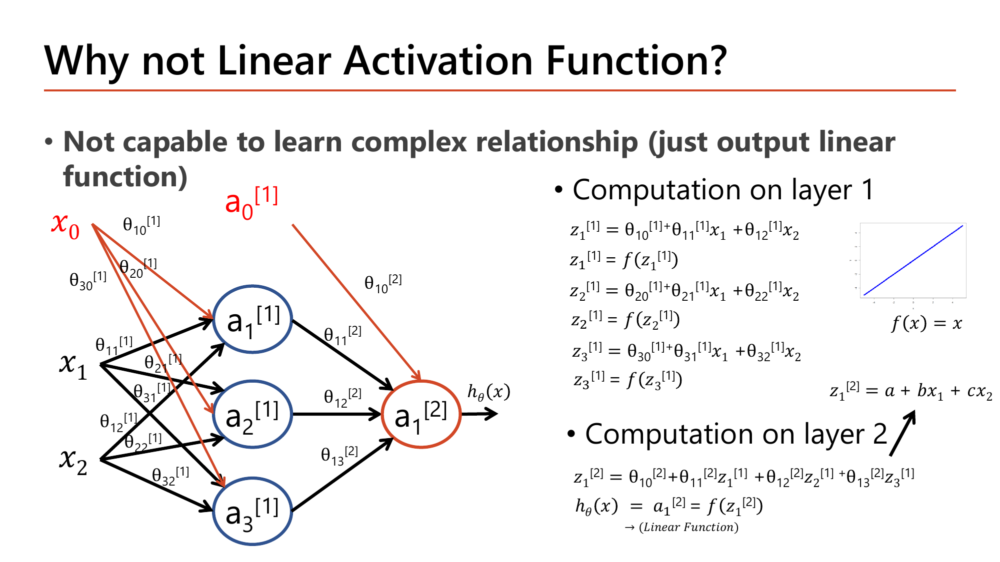
สไลด์ตอบคำถามนี้ด้วยการลองทำจริง: สมมติ \(f(x)=x\) (linear — คือไม่ทำอะไรเลย) ทุก node ในเครือข่าย input 2 → hidden 3 → output 1 แล้วดูว่าได้อะไร.
Computation on layer 1 (สไลด์เขียนสามบรรทัด):
$$z_1^{[1]} = \theta_{10}^{[1]}+\theta_{11}^{[1]}x_1+\theta_{12}^{[1]}x_2,\quad z_2^{[1]} = \theta_{20}^{[1]}+\theta_{21}^{[1]}x_1+\theta_{22}^{[1]}x_2,\quad z_3^{[1]} = \theta_{30}^{[1]}+\theta_{31}^{[1]}x_1+\theta_{32}^{[1]}x_2$$และเนื่องจาก \(f\) เป็น identity ⇒ \(a_j^{[1]} = f(z_j^{[1]}) = z_j^{[1]}\) (activation ไม่ได้แปลงอะไรเลย).
Computation on layer 2: \(z_1^{[2]} = \theta_{10}^{[2]} + \theta_{11}^{[2]}z_1^{[1]} + \theta_{12}^{[2]}z_2^{[1]} + \theta_{13}^{[2]}z_3^{[1]}\) — เมื่อแทน \(z_j^{[1]}\) ที่เป็นพหุนามดีกรี 1 ของ \(x_1,x_2\) เข้าไป แล้วรวมพจน์เหมือนกัน จะได้รูป
$$z_1^{[2]} = a + bx_1 + cx_2 \quad \to \quad (\textit{Linear Function})$$ตามที่สไลด์สรุปไว้ทุกตัวอักษร. หัวข้อบนหน้าระบุผลเสียตรงๆ: "Not capable to learn complex relationship (just output linear function)".
ที่ \(x=0\): \(z^{[3]} = 3\); ที่ \(x=1\): 15; ที่ \(x=2\): 27 — ผลต่างคงที่ 12 ทุกก้าว ⇒ เป็นเส้นตรงแน่นอน (ถ้าไม่เป็นเส้นตรง ผลต่างจะไม่คงที่)
ไม่ว่าจะซ้อนกี่ layer ก็ได้ฟังก์ชันเชิงเส้นของ \(x\) ตัวเดียว (สไลด์เขียนในรูป \(a+bx_1+cx_2\)). แปลว่าเครือข่าย 100 layer ที่ใช้ linear activation มีความสามารถเท่ากับ linear regression ตัวเดียว — เสียพารามิเตอร์ไปเปล่าๆ. non-linearity จึงไม่ใช่ของประดับ แต่เป็นสิ่งเดียวที่ทำให้ "ความลึก" มีความหมาย.
ที่ hidden layer เราเลือก activation ตามเกณฑ์ "gradient ไหลดีไหม" (จึงเลือก ReLU). ที่ output layer เกณฑ์เปลี่ยนไปคนละเรื่อง: ค่าที่ออกมาต้องอยู่ในรูปที่ตีความได้ตรงกับงาน. ทำนายราคาบ้านแล้วได้ค่าในช่วง [0,1] ก็ใช้ไม่ได้; ทำนายความน่าจะเป็นแล้วได้ค่า 7.3 ก็ใช้ไม่ได้เช่นกัน.
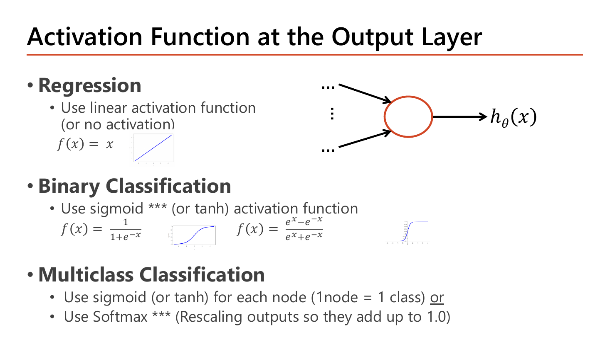
สไลด์แบ่งเป็นสามกรณีตามชนิดของงาน และใส่ดอกจัน *** กำกับตัวเลือกที่แนะนำ ซึ่งเป็นจุดที่ข้อสอบชอบหยิบ:
| ชนิดงาน | Activation ที่ output | เหตุผล / สูตร |
|---|---|---|
| Regression | linear activation (หรือไม่ใส่ activation เลย) | \(f(x)=x\) — ทำนายตัวเลขที่เป็นเท่าไรก็ได้ ห้ามบีบช่วง |
| Binary Classification | sigmoid *** (หรือ tanh) | \(f(x)=\dfrac{1}{1+e^{-x}}\) ให้ค่าใน [0,1] ตีความเป็นความน่าจะเป็นของคลาส 1 ได้; tanh ให้ \(\dfrac{e^{x}-e^{-x}}{e^{x}+e^{-x}}\) ในช่วง [−1,1] |
| Multiclass Classification | sigmoid (หรือ tanh) ทีละ node — 1 node = 1 class หรือ Softmax *** | Softmax = "Rescaling outputs so they add up to 1.0" |
ทำไม regression ใช้ linear ได้ทั้งที่ §5C เพิ่งบอกว่า linear ไม่ดี: เพราะข้อห้ามใน §5C เป็นเรื่องของ hidden layer ที่มีชั้นถัดไปมารวมต่อ (จึงยุบเป็นเส้นตรง). output layer เป็นชั้นสุดท้าย ไม่มีใครมารวมต่อแล้ว — ความไม่เชิงเส้นที่ hidden layer สร้างไว้ยังอยู่ครบ. ถ้าดันใส่ sigmoid ที่ output ของงาน regression ค่าทำนายจะถูกบีบอยู่ใน [0,1] ⇒ ทำนายราคาบ้าน 3 ล้านไม่ได้เลย.
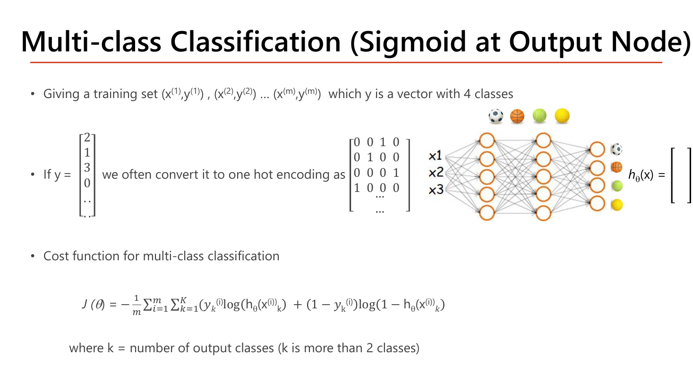
หน้านี้อธิบายวิธีแรกของ multiclass: ใช้ sigmoid แยกทุก node. ขั้นแรกต้องแปลงคำตอบให้เป็น one-hot encoding ก่อน. ตัวอย่างในสไลด์ใช้ 4 คลาส และแปลงเวกเตอร์ \(y = [2,\ 1,\ 3,\ 0,\ \dots]^\top\) เป็นเมทริกซ์:
| \(y\) เดิม | one-hot | อ่านว่า |
|---|---|---|
| 2 | 0 0 1 0 | ช่องที่ 3 เป็น 1 (นับคลาสจาก 0) ⇒ คลาส 2 |
| 1 | 0 1 0 0 | ช่องที่ 2 เป็น 1 ⇒ คลาส 1 |
| 3 | 0 0 0 1 | ช่องที่ 4 เป็น 1 ⇒ คลาส 3 |
| 0 | 1 0 0 0 | ช่องที่ 1 เป็น 1 ⇒ คลาส 0 |
ทำไมต้อง one-hot: ถ้าปล่อยคำตอบเป็นตัวเลข 0,1,2,3 โมเดลจะเข้าใจผิดว่าคลาส 3 "มากกว่า" คลาส 1 สามเท่า และคลาส 2 อยู่ "ระหว่าง" คลาส 1 กับ 3 — ทั้งที่มันเป็นแค่ชื่อ (ฟุตบอล/บาสเกตบอล/เทนนิส/ปิงปอง ตามภาพลูกบอล 4 ลูกในสไลด์) ไม่มีลำดับ. one-hot ทำให้ทุกคลาสอยู่ห่างกันเท่ากันหมด และทำให้ output layer มี 1 node ต่อ 1 คลาสพอดี.
cost function ของวิธีนี้คือ cross-entropy ของหน้า 1 แต่บวกผลรวมอีกชั้นเพื่อไล่ทุกคลาส \(k\):
$$J(\theta) = -\frac{1}{m}\sum_{i=1}^{m}\sum_{k=1}^{K}\Big[y_k^{(i)}\log\big(h_\theta(x^{(i)})\big)_k + \big(1-y_k^{(i)}\big)\log\Big(1-\big(h_\theta(x^{(i)})\big)_k\Big)\Big]$$โดยที่ \(k\) = จำนวนคลาส output (สไลด์กำกับว่า "k is more than 2 classes"). อ่านให้ออก: ผลรวมชั้นนอก \(\sum_i\) ไล่ตัวอย่าง, ผลรวมชั้นใน \(\sum_k\) ไล่ node output. ในทางปฏิบัติแปลว่า "ทำ binary classification พร้อมกัน \(K\) ปัญหา" — node ที่ 1 ตอบว่า "ใช่ฟุตบอลไหม", node ที่ 2 ตอบว่า "ใช่บาสไหม" ฯลฯ แยกกันเป็นอิสระ. จุดอ่อนของวิธีนี้: เพราะแต่ละ node ตัดสินเองโดยไม่คุยกัน ผลรวมของ output ทั้งหมดจึงไม่จำเป็นต้องเท่ากับ 1 — อาจได้ \([0.9,\ 0.8,\ 0.1,\ 0.7]\) ซึ่งตีความเป็นความน่าจะเป็นของคลาสที่แยกขาดจากกันไม่ได้. นี่คือปัญหาที่หน้า 38 มาแก้.
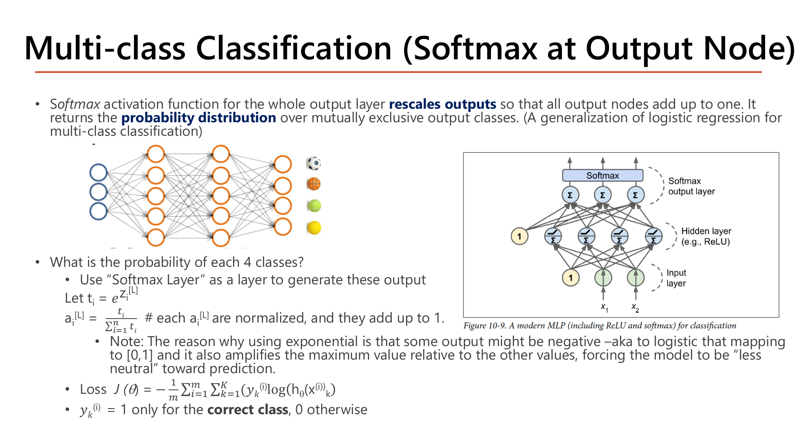
สไลด์นิยามว่า Softmax คือ activation ของทั้ง output layer พร้อมกัน (ไม่ใช่ทีละ node) ที่ rescales outputs ให้ node ทั้งหมดบวกกันได้ 1 และคืนค่าเป็น probability distribution เหนือคลาสที่ "mutually exclusive" (แยกขาดจากกัน — เป็นได้แค่คลาสเดียว). สไลด์เสริมว่ามันคือ "A generalization of logistic regression for multi-class classification".
สูตรสองบรรทัดตามสไลด์: ตั้ง \(t_i = e^{z_i^{[L]}}\) แล้ว
$$a_i^{[L]} = \frac{t_i}{\sum_{i=1}^{n}t_i}$$คอมเมนต์ที่อาจารย์เขียนกำกับไว้ท้ายสูตร: "each \(a_i^{[L]}\) are normalized, and they add up to 1." — ทุกช่องถูก normalize แล้วและบวกกันได้ 1
สังเกตว่าช่องที่ 2 ซึ่งเดิมนำอยู่ 2 หน่วย ตอนนี้นำอยู่เกือบ 7 เท่า — exponential ขยายช่องว่าง.
อ่านผลเป็นภาษาคน: "โมเดลเชื่อว่าเป็นคลาสที่ 2 ด้วยความมั่นใจ 82.1%, คลาสที่ 1 11.1%, คลาสที่ 3 6.7%" — ตีความเป็นความน่าจะเป็นได้ทันทีเพราะบวกกันได้ 1 พอดี ซึ่งวิธี sigmoid แยก node ของหน้า 37 ทำไม่ได้.
ทำไมต้องใช้ exponential — สไลด์ให้เหตุผลไว้สองข้อ ใน note ที่ควรท่องได้: "The reason why using exponential is that some output might be negative – aka to logistic that mapping to [0,1] and it also amplifies the maximum value relative to the other values, forcing the model to be 'less neutral' toward prediction."
logit อาจติดลบได้ เช่น \(z = [-1,\ -2]\). ถ้าหารด้วยผลรวมตรงๆ จะได้ \(-1/(-3) = 0.333\) และ \(-2/(-3)=0.667\) ⇒ คลาสที่คะแนนต่ำกว่ากลับได้ความน่าจะเป็นสูงกว่า — ผิดสิ้นเชิง. แต่ \(e^{x} > 0\) เสมอ ⇒ \(e^{-1}=0.3679,\ e^{-2}=0.1353\) ⇒ ได้ \([0.7311,\ 0.2689]\) ซึ่งเรียงลำดับถูกต้อง. นี่คือความหมายของ "aka to logistic that mapping to [0,1]".
จากตัวอย่างข้างบน \(z=[1,3,0.5]\): ถ้าใช้สัดส่วนธรรมดา \(1/4.5, 3/4.5, 0.5/4.5 = [0.222, 0.667, 0.111]\) แต่ softmax ให้ \([0.111, 0.821, 0.067]\) — ตัวที่ชนะได้ส่วนแบ่งเพิ่มจาก 66.7% เป็น 82.1%. โมเดลจึง "กล้าฟันธง" มากขึ้นแทนที่จะตอบกลางๆ.
Loss ของ softmax ที่สไลด์ให้ ต่างจากของหน้า 37 ตรงที่มีเทอมเดียว:
$$J(\theta) = -\frac{1}{m}\sum_{i=1}^{m}\sum_{k=1}^{K}y_k^{(i)}\log\big(h_\theta(x^{(i)})\big)_k$$เพราะสไลด์กำกับว่า \(y_k^{(i)} = 1\) only for the correct class, 0 otherwise ⇒ ในผลรวม \(\sum_k\) มีแค่พจน์เดียวที่ไม่เป็นศูนย์ คือพจน์ของคลาสที่ถูก. พูดง่ายๆ: cost = \(-\log(\)ความน่าจะเป็นที่โมเดลให้กับคำตอบที่ถูก\()\). จากตัวอย่างข้างบน ถ้าคำตอบจริงคือคลาสที่ 2: cost \(= -\ln 0.8214 = 0.1967\) (ต่ำ ดี); ถ้าคำตอบจริงคือคลาสที่ 3: cost \(= -\ln 0.0674 = 2.697\) (สูง โดนปรับหนัก). ไม่ต้องมีเทอม \((1-y)\log(1-h)\) เพราะการบังคับให้ผลรวมเป็น 1 อยู่แล้วทำให้การดันคลาสที่ถูกขึ้น อัตโนมัติ กดคลาสที่ผิดลง.
ภาพขวาของสไลด์ (Figure 10-9 จากหนังสือ Hands-on ML) แสดงสถาปัตยกรรมที่ใช้จริง: input layer → hidden layer (e.g., ReLU) → Softmax output layer — ตรงกับคำแนะนำรวมของบทนี้พอดี คือ ReLU ที่ hidden, softmax ที่ output สำหรับงาน multiclass.
ช่องของคลาสที่ถูก (−0.3348): ลบ ⇒ ต้องเพิ่ม \(z_1\); ช่องคลาสผิด (บวก): ต้องลด \(z_2, z_3\). ผลรวมของ \(\delta\) เท่ากับ 0 พอดี — สมเหตุสมผล เพราะผลรวมของ \(a\) และของ \(y\) ต่างก็เป็น 1.
สูตร \(\delta^{[L]} = a^{[L]} - y\) จาก §2 ใช้ได้เหมือนเดิมกับ softmax + cross-entropy — เป็นเหตุผลเดียวกับที่ sigmoid + cross-entropy หักล้าง \(g'\) พอดี. นี่คือสาเหตุที่เฟรมเวิร์กรวม softmax เข้าไปในฟังก์ชัน loss (เช่น CrossEntropyLoss ของ PyTorch รับ logit ดิบ ไม่ใช่ softmax แล้ว) — รวมกันแล้วอนุพันธ์ง่ายและเสถียรกว่าแยกกัน.
เท่ากับตัวอย่างเดิมเป๊ะ ⇒ softmax ขึ้นกับความต่างระหว่าง logit เท่านั้น ไม่ขึ้นกับระดับสัมบูรณ์. ใช้จริง: โค้ดมักลบ \(\max(z)\) ก่อนคำนวณ (เช่น \([2,1,0]\to[0,-1,-2]\)) เพื่อกัน \(e^{z}\) ล้น (overflow) โดยไม่เปลี่ยนคำตอบ — ตรวจแล้วได้ \([0.1112, 0.8214, 0.0674]\) เท่าเดิมทุกตำแหน่ง.
ถึงตรงนี้เราเทรนโมเดลเป็นแล้ว. คำถามถัดไปคือ "รู้ได้อย่างไรว่ามันดีจริง" — และคำตอบไม่ใช่ accuracy บน training set (ซึ่ง relu ได้ 100% ในหน้า 34 แต่นั่นคือข้อสอบที่โมเดลเคยเห็นเฉลยมาแล้ว).
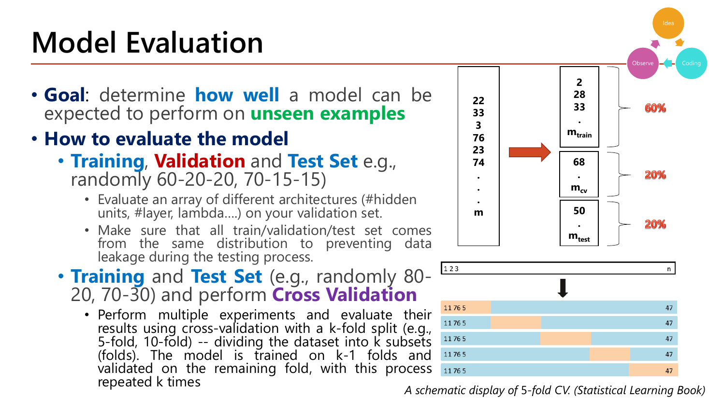
อาจารย์เปิดหน้าด้วยการทำสี • Goal ไว้ชัดเจน: determine how well a model can be expected to perform on unseen examples — เป้าหมายคือคาดการณ์ผลบนข้อมูลที่โมเดลไม่เคยเห็น ไม่ใช่ข้อมูลที่ใช้เทรน. จากนั้นตั้งคำถาม • How to evaluate the model และให้สองแนวทาง:
แนวทางที่ 1 — แบ่งสามส่วน: • Training, Validation และ Test Set เช่น สุ่มแบ่ง 60-20-20 หรือ 70-15-15. แปลงเป็นตัวเลขจริงกับชุดข้อมูล 1,000 ตัวอย่าง:
| สัดส่วน | \(m_{\text{train}}\) | \(m_{\text{cv}}\) (validation) | \(m_{\text{test}}\) |
|---|---|---|---|
| 60-20-20 | 600 | 200 | 200 |
| 70-15-15 | 700 | 150 | 150 |
หน้าที่ของแต่ละส่วนต่างกันคนละเรื่อง และนี่คือจุดที่สับสนบ่อย: training set ใช้ปรับ \(\theta\) (backprop ทำงานกับชุดนี้เท่านั้น); validation set ใช้ตามที่สไลด์เขียนว่า "Evaluate an array of different architectures (#hidden units, #layer, lambda….) on your validation set" — คือใช้เลือก hyperparameter ว่าจะเอากี่ layer กี่ node \(\lambda\) เท่าไร; test set ใช้รายงานผลครั้งเดียวตอนจบ ห้ามเอามาตัดสินใจอะไรทั้งสิ้น (ไม่งั้นมันก็กลายเป็น validation set อีกอัน).
คำเตือนที่สำคัญที่สุดของหน้า: "Make sure that all train/validation/test set comes from the same distribution to preventing data leakage during the testing process." — ทุกชุดต้องมาจากการแจกแจงเดียวกัน. ตัวอย่างที่ผิด: เทรนด้วยรูปถ่ายจากกล้องมืออาชีพ แต่ test ด้วยรูปจากมือถือ ⇒ ผลที่วัดได้ไม่สะท้อนความจริง. ส่วน data leakage คืออาการที่ข้อมูล test รั่วเข้าไปในขั้นตอนเทรน เช่น normalize ข้อมูลทั้งก้อนก่อนแบ่ง (ค่าเฉลี่ยที่ใช้ปนข้อมูล test ไปแล้ว) หรือมีตัวอย่างซ้ำอยู่ทั้งสองฝั่ง ⇒ คะแนน test สูงเกินจริง.
แนวทางที่ 2 — แบ่งสองส่วนแล้วทำ cross validation: • Training และ Test Set (เช่น สุ่ม 80-20 หรือ 70-30) แล้วทำ Cross Validation. สไลด์อธิบายวิธี k-fold ไว้ว่า "dividing the dataset into k subsets (folds). The model is trained on k-1 folds and validated on the remaining fold, with this process repeated k times".
รอบที่ 1: เทรนด้วย fold 2,3,4,5 (800 ตัวอย่าง) วัดด้วย fold 1 (200); รอบที่ 2: เทรนด้วย fold 1,3,4,5 วัดด้วย fold 2; … จนถึงรอบที่ 5 — ทุกตัวอย่างได้เป็น "ตัววัด" พอดีหนึ่งครั้ง
เช่นได้ accuracy \([0.91, 0.88, 0.93, 0.90, 0.89]\) ⇒ เฉลี่ย \(0.902\) และส่วนเบี่ยงเบนบอกว่าผลนิ่งแค่ไหน
ข้อดีเหนือการแบ่งครั้งเดียว: ถ้าแบ่ง validation แค่ก้อนเดียว 200 ตัว ผลอาจ "ฟลุ๊ก" ตามว่าสุ่มได้ตัวอย่างง่ายหรือยาก. k-fold ใช้ข้อมูลทุกตัวทั้งเป็นตัวเทรนและตัววัด ⇒ ประมาณการนิ่งกว่า. ราคาที่จ่าย: ต้องเทรน \(k\) ครั้ง — สไลด์ระบุ 5-fold, 10-fold เป็นค่าที่นิยม. นี่คือเหตุผลที่ deep learning (ซึ่งเทรนครั้งเดียวก็นานแล้ว) มักใช้แนวทางที่ 1 มากกว่า.
เมื่อวัดผลแล้วไม่พอใจ หน้านี้บอกว่าต้องวินิจฉัยก่อนว่าเป็นโรคไหน แล้วจึงเลือกยา — ใช้ยาผิดโรคจะแย่ลง:
| อาการ | สังเกตจาก | วิธีแก้ที่สไลด์ให้ |
|---|---|---|
| High Bias (not fit training set well) = Underfitting | \(J_{\text{train}}\) สูง และ \(J_{cv}\) ก็สูงพอๆ กัน | Add relevant features · Train longer / increase #iteration · Increase #hidden, #layer |
| High Variance (only fit training very well) = Overfitting | \(J_{\text{train}}\) ต่ำมาก แต่ \(J_{cv}\) สูง (ช่องว่างกว้าง) | Get more data · Remove non informative features · Remove some #hidden, #layer · Regularization · Dropout (later) · Early stopping (later) · Data Augmentation (later) |
สังเกตว่ารายการทั้งสองฝั่งตรงข้ามกันเป๊ะ: bias สูงให้ เพิ่ม hidden/layer, variance สูงให้ ลด hidden/layer. นี่คือกับดักข้อสอบที่พบบ่อยที่สุดของหน้านี้ — ถ้าจำสลับกันก็ตอบผิดทั้งข้อ. วิธีจำ: bias สูง = โมเดลโง่เกินไป ต้องทำให้ฉลาดขึ้น; variance สูง = โมเดลท่องจำมากเกินไป ต้องทำให้มันจำน้อยลง. คำว่า "(later)" ที่กำกับ Dropout / Early stopping / Data Augmentation หมายถึงจะสอนในบทหลัง (Lesson 6) — ส่วน Regularization สอนในหน้าถัดไปของบทนี้เลย.
กราฟ "Diagnostic Bias vs Variance" ตรงกลางหน้าคือเครื่องมือวินิจฉัยที่ใช้จริง: แกนนอนคือ Training Time (จำนวนรอบ) เส้นสีแดง \(J_{\text{train}}\) ลดลงเรื่อยๆ ไม่หยุด ส่วนเส้นสีเขียว \(J_{cv}\) ลดลงช่วงแรกแล้วกลับเชิดขึ้น. ช่วงซ้ายสุด (ทั้งสองเส้นยังสูง) คือโซน High Bias; ช่วงขวาสุด (เส้นแดงต่ำ เส้นเขียวสูง ช่องว่างกว้าง) คือโซน High Variance; จุดที่ \(J_{cv}\) ต่ำสุดคือจุดที่ควรหยุด. นี่เชื่อมกับข้อความใต้ภาพพอดี: "A major challenge in training neural networks is how long to train them — long enough to learn the mapping, but not so long that it overfits the training data. Stop training at the point when performance on a validation set starts to degrade." ซึ่งก็คือนิยามของ early stopping นั่นเอง. ภาพ training history สองภาพด้านขวาแสดงอาการจริง: ภาพบน (High Bias) เส้น acc และ val_acc ต่ำใกล้กันทั้งคู่ราว 0.6–0.7; ภาพล่าง (High Variance) เส้น acc ไต่ขึ้นเกือบ 0.9 แต่ val_acc ค้างที่ ~0.7 และ val_loss เชิดขึ้นสวนทางกับ loss ที่ดิ่งลงเหลือ 0.2 — ช่องว่างระหว่างเส้นฝึกกับเส้น validation คือตัวชี้วัด overfitting ที่อ่านง่ายที่สุด.
หน้า 40 ระบุ "Regularization" เป็นหนึ่งในยาแก้ High Variance สามหน้าถัดไปคือคำอธิบายเต็มของยาตัวนั้น.
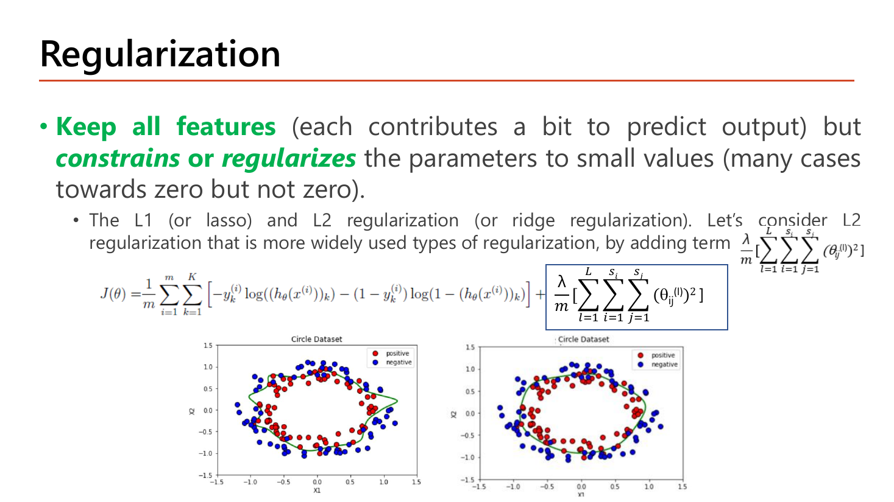
แนวคิดที่อาจารย์ทำสีไว้: • Keep all features (each contributes a bit to predict output) แต่ constrains or regularizes พารามิเตอร์ให้เป็นค่าเล็กๆ ("many cases towards zero but not zero").
ทำไมวิธีนี้ถึงแก้ overfitting ได้: ลองนึกถึงเครือข่ายที่ท่องจำข้อมูลฝึกได้เป๊ะ — มันต้องวาดเส้นแบ่งที่หยักไปมาอย่างรุนแรงเพื่อเลี้ยวหลบจุดแปลกๆ ทุกจุด และการจะหยักแรงได้ต้องมี weight ที่ใหญ่ (เพราะ \(z=\sum\theta x\) จะเปลี่ยนเร็วเมื่อ \(\theta\) ใหญ่). ดังนั้นการบีบ \(\theta\) ให้เล็กลงก็คือการบังคับให้เส้นแบ่ง "เรียบขึ้น" โดยอัตโนมัติ. ภาพ Circle Dataset สองภาพในสไลด์แสดงผลนี้ตรงๆ: ภาพซ้ายเส้นแบ่งบิดเป็นหยักเว้าแหว่งไล่ตามจุดข้อมูลรายจุด ส่วนภาพขวาเส้นแบ่งเป็นวงรีเรียบที่คลุมกลุ่มจุดสีแดงตรงกลางได้โดยไม่ไล่ตามจุดรบกวนแต่ละจุด — ข้อมูลชุดเดียวกัน ต่างกันแค่มีเทอม regularization หรือไม่.
"Keep all features" คือจุดต่างสำคัญ — ไม่ได้ทิ้ง feature ไหนเลย แค่ลดเสียงของทุก feature ลงพร้อมกัน
วิธีทำคือบวกเทอมโทษ (penalty) เข้าไปใน cost:
$$J_{\text{reg}}(\theta) = J(\theta) + \frac{\lambda}{m}\left[\sum_{l=1}^{L}\sum_{i=1}^{s_i}\sum_{j=1}^{s_j}\left(\theta_{ij}^{(l)}\right)^2\right]$$ผลรวมมีสามชั้นเพราะต้องไล่ให้ครบทุก weight: \(l\) = layer, \(i\) = node ปลายทางใน layer นั้น, \(j\) = node ต้นทาง. ส่วน \(\lambda\) (lambda) คือ hyperparameter ที่ควบคุมว่าจะบีบแรงแค่ไหน — \(\lambda=0\) คือไม่บีบเลย, \(\lambda\) ใหญ่คือบีบจน weight เกือบเป็นศูนย์หมด (underfit).
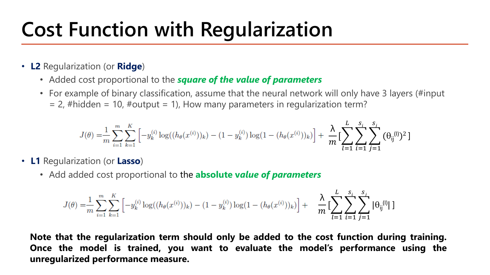
หน้านี้วาง L2 กับ L1 เทียบกันให้เห็นว่าต่างกันแค่จุดเดียว:
| L2 (Ridge) | L1 (Lasso) | |
|---|---|---|
| เทอมที่บวกเข้า cost | \(\dfrac{\lambda}{m}\left[\sum_l\sum_i\sum_j\left(\theta_{ij}^{(l)}\right)^2\right]\) | \(\dfrac{\lambda}{m}\left[\sum_l\sum_i\sum_j\left|\theta_{ij}^{(l)}\right|\right]\) |
| คำที่อาจารย์ทำสี | "square of the value of parameters" | "absolute value of parameters" |
| \(\theta = 3\) โดนปรับเท่าไร (ต่อ \(\lambda/m\)) | \(3^2 = 9\) | \(|3| = 3\) |
| \(\theta = 0.5\) โดนปรับเท่าไร | \(0.5^2 = 0.25\) | \(|0.5| = 0.5\) |
อาจารย์ทำสีไว้ว่า • L2 Regularization (หรือ Ridge) คือการเพิ่ม cost ที่แปรผันกับ square of the value of parameters ส่วน • L1 Regularization (หรือ Lasso) แปรผันกับ absolute v alue of parameters.
ตัวเลขในตารางบอกความต่างเชิงพฤติกรรม: L2 ลงโทษ weight ตัวใหญ่หนักกว่ามาก (\(\theta=3\) โดน 9 ส่วน \(\theta=0.5\) โดนแค่ 0.25 — ต่างกัน 36 เท่า ทั้งที่ค่าต่างกัน 6 เท่า) จึงเน้นกด weight ก้อนใหญ่ให้เล็กลงแต่ไม่ค่อยฆ่าให้เป็นศูนย์. ส่วน L1 ลงโทษเป็นสัดส่วนตรง (ต่างกัน 6 เท่าพอดี) ⇒ มีแรงกดคงที่แม้ weight เล็กมาก จึงมักดัน weight บางตัวให้เป็นศูนย์สนิท (เท่ากับคัด feature ทิ้ง).
41 พารามิเตอร์ ถ้านับรวม bias ตามสูตรมิติในสไลด์. หมายเหตุที่ควรรู้ (เสริมความเข้าใจ นอกสไลด์): ในทางปฏิบัติ bias มักไม่ถูก regularize (เพราะ bias ไม่ได้ทำให้เส้นแบ่งหยัก แค่เลื่อนตำแหน่ง) ⇒ จำนวนที่ถูกบีบจริงคือ \(10\times2 + 1\times10 = 30\) ตัว. สไลด์หน้า 43 ก็สอดคล้องกับข้อนี้เพราะแยกสูตร gradient ของ \(j=0\) ออกจาก \(j\ge1\). ในข้อสอบ: ถ้าโจทย์ถามตามสูตรผลรวมสามชั้นที่เขียนไว้หน้า 41–42 ให้ตอบ 41; ถ้าโจทย์ระบุว่า "ไม่รวม bias" ให้ตอบ 30.
คำเตือนตัวหนาใต้หน้า 42 ที่ออกสอบง่ายมาก: "Note that the regularization term should only be added to the cost function during training. Once the model is trained, you want to evaluate the model's performance using the unregularized performance measure." — เทอม regularization ใส่เฉพาะตอนเทรนเท่านั้น. เหตุผล: ค่า \(J_{\text{reg}}\) เป็นส่วนผสมของ "ทำนายผิดเท่าไร" กับ "weight ใหญ่เท่าไร" ⇒ ถ้าเอาไปรายงานผล ตัวเลขจะไม่ใช่ความผิดพลาดของการทำนายจริง และเทียบข้ามโมเดลที่ใช้ \(\lambda\) ต่างกันไม่ได้เลย.
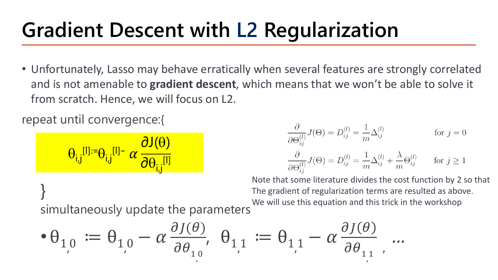
= 1, and a note that some literature divides the cost function by 2">ประโยคแรกของหน้าตอบคำถามที่ค้างจากหน้า 41 ว่า "ทำไมเน้น L2": "Unfortunately, Lasso may behave erratically when several features are strongly correlated and is not amenable to gradient descent, which means that we won't be able to solve it from scratch. Hence, we will focus on L2." — เหตุผลสองข้อคือ (1) L1 แกว่งไม่นิ่งเมื่อ feature สัมพันธ์กันมาก และ (2) L1 เข้ากับ gradient descent ไม่ได้. ข้อหลังมีเหตุผลทางคณิตศาสตร์ตรงไปตรงมา: อนุพันธ์ของ \(|\theta|\) ที่ \(\theta=0\) ไม่มีอยู่จริง (ความชันฝั่งซ้ายเป็น −1 ฝั่งขวาเป็น +1 ไม่เท่ากัน — เหมือนมุมหักของ ReLU ที่ 0) ส่วนอนุพันธ์ของ \(\theta^2\) คือ \(2\theta\) ซึ่งหาได้ทุกจุดรวมทั้งที่ 0. เมื่อจะเขียน backprop เองจากศูนย์จึงใช้ L2 ได้สะดวกกว่า.
สูตร gradient ที่รวม regularization แล้ว (สไลด์แยกเป็นสองกรณี):
$$\frac{\partial}{\partial\theta_{ij}^{(l)}}J(\Theta) = D_{ij}^{(l)} = \frac{1}{m}\Delta_{ij}^{(l)}\qquad\qquad\text{สำหรับ } j = 0$$ $$\frac{\partial}{\partial\theta_{ij}^{(l)}}J(\Theta) = D_{ij}^{(l)} = \frac{1}{m}\Delta_{ij}^{(l)} + \frac{\lambda}{m}\theta_{ij}^{(l)}\qquad\text{สำหรับ } j \ge 1$$คอลัมน์ \(j=0\) คือ bias — ไม่ถูกบีบ; คอลัมน์อื่นบวกเทอม \(\dfrac{\lambda}{m}\theta\) เข้าไปใน gradient
แล้วอัปเดตด้วยกฎเดิมทุกประการ \(\theta_{ij}^{[l]} := \theta_{ij}^{[l]} - \alpha\dfrac{\partial J(\theta)}{\partial\theta_{ij}^{[l]}}\) (สไลด์ไฮไลต์สีเหลืองไว้เพื่อย้ำว่าไม่มีอะไรเปลี่ยนในขั้นอัปเดต — สิ่งที่เปลี่ยนคือค่าของ gradient เท่านั้น).
เทียบกับกรณีไม่มี regularization ที่ได้ 1.025808 — weight โตน้อยลง
เทอม \(\frac{\lambda}{m}\theta\) มีเครื่องหมายเดียวกับ \(\theta\) เสมอ ⇒ เมื่อเข้าสูตร \(\theta - \alpha D\) มันจะดึง \(\theta\) เข้าหาศูนย์ทุกรอบ ไม่ว่า \(\theta\) จะเป็นบวกหรือลบ. ผลสะสมคือ weight ถูก "หดตัว" ทีละนิดทุกรอบ (บางตำราจึงเรียกว่า weight decay) ซึ่งสมดุลกับแรงจาก \(\Delta\) ที่พยายามดันให้ใหญ่ขึ้นเพื่อ fit ข้อมูล.
หมายเหตุท้ายหน้า 43: "Note that some literature divides the cost function by 2 so that the gradient of regularization terms are resulted as above. We will use this equation and this trick in the workshop." — บางตำราเขียน cost เป็น \(\frac{1}{2m}\) และเทอม penalty เป็น \(\frac{\lambda}{2m}\sum\theta^2\) เพื่อให้เวลาหาอนุพันธ์ เลข 2 จากกำลังสอง (\(\frac{d}{d\theta}\theta^2 = 2\theta\)) ไปหักกับ 2 ที่ตัวส่วนพอดี ⇒ เหลือ \(\frac{\lambda}{m}\theta\) สวยงามตามสูตรข้างบน. สไลด์ระบุว่าจะใช้รูปนี้ต่อใน workshop จึงควรจำรูปนี้.
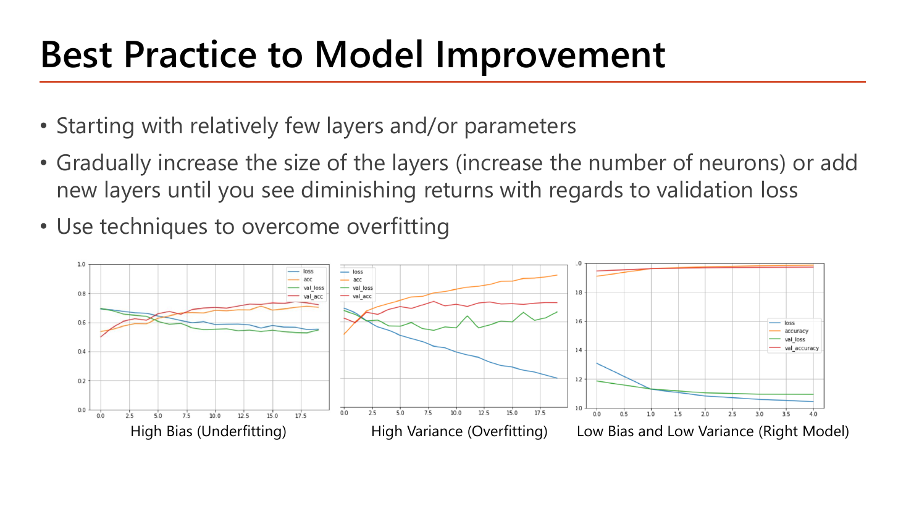
สไลด์ให้สูตรการทำงานสามข้อ: (1) "Starting with relatively few layers and/or parameters" — เริ่มจากเล็กก่อน; (2) "Gradually increase the size of the layers (increase the number of neurons) or add new layers until you see diminishing returns with regards to validation loss" — ค่อยๆ ขยายจนกว่าจะเริ่มได้ผลตอบแทนลดน้อยถอยลง โดยดูจาก validation loss ไม่ใช่ training loss; (3) "Use techniques to overcome overfitting" — เมื่อขยายจนเริ่ม overfit ก็ใส่ยาจากรายการหน้า 40.
กราฟสามภาพใต้หน้าคือสามสถานะที่ต้องแยกให้ออกจากเส้น 4 เส้น (loss, accuracy, val_loss, val_accuracy): ภาพ High Bias — เส้น accuracy กับ val_accuracy พันกันอยู่แถว 0.6–0.7 และ loss ลงช้าๆ ค้างที่ ~0.55 แปลว่าโมเดลไม่เก่งพอแม้แต่กับข้อมูลที่เคยเห็น; ภาพ High Variance — accuracy ไต่ถึง ~0.93 แต่ val_accuracy ค้างที่ ~0.73 และ val_loss เชิดขึ้นสวนทาง loss ที่ลงไปถึง ~0.2 แปลว่าท่องจำข้อมูลฝึกแต่ใช้กับของใหม่ไม่ได้; ภาพ Low Bias and Low Variance (Right Model) — ทั้ง accuracy และ val_accuracy วิ่งไปชนเพดานเกือบ 1.0 พร้อมกัน และ loss กับ val_loss ก็ลงมาต่ำใกล้กันทั้งคู่ภายในราว 4 epoch. ตัวชี้วัดที่ต้องดูจึงไม่ใช่เส้นใดเส้นหนึ่ง แต่คือ "ช่องว่างระหว่างเส้นฝึกกับเส้น validation" ควบคู่กับ "ระดับความสูงของทั้งคู่".
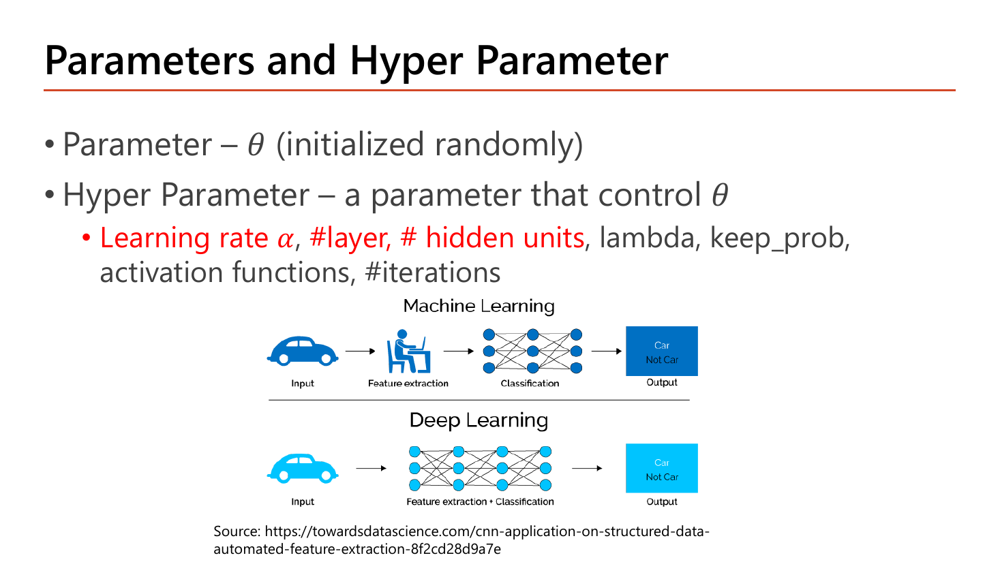
นิยามสองคำที่สับสนกันบ่อยที่สุดในวิชานี้: Parameter คือ \(\theta\) ซึ่ง "initialized randomly" แล้วโมเดลเรียนรู้เองผ่าน backprop + gradient descent; Hyper Parameter คือ "a parameter that control \(\theta\)" — ตัวที่เราตั้งเองก่อนเทรน และเป็นตัวกำหนดว่า \(\theta\) จะถูกเรียนอย่างไร.
รายการ hyperparameter ที่สไลด์ให้ โดยสองตัวแรกทำสีแดงไว้: • Learning rate 𝛼, #layer, # hidden units, lambda, keep_prob, activation functions, #iterations. สังเกตว่าทุกตัวในรายการนี้ไม่มีตัวไหนถูกอัปเดตโดย gradient descent เลย — นั่นคือเส้นแบ่งที่ชัดที่สุดระหว่างสองคำ. (\(\lambda\) คือค่าความแรงของ regularization จาก §7; keep_prob เป็นของ Dropout ซึ่งจะสอนใน Lesson 6.)
parameter = สิ่งที่โมเดลเรียนเอง; hyperparameter = ปุ่มที่เราหมุนเอง แล้วเลือกค่าที่ดีที่สุดด้วย validation set
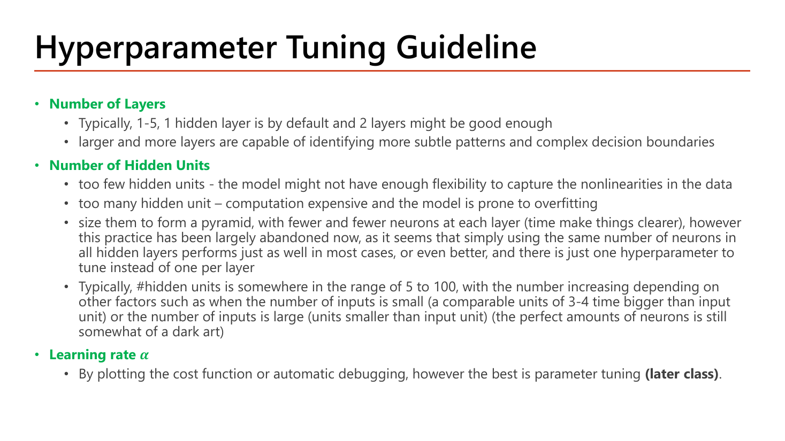
หน้านี้ให้ตัวเลขที่ใช้ตอบข้อสอบได้ตรงๆ สามกลุ่ม:
1. • Number of Layers — "Typically, 1-5, 1 hidden layer is by default and 2 layers might be good enough" และ "larger and more layers are capable of identifying more subtle patterns and complex decision boundaries". ตัวเลขที่ต้องจำ: 1–5 ชั้น, ค่าเริ่มต้นคือ 1 ชั้น, 2 ชั้นมักพอแล้ว.
2. • Number of Hidden Units — สไลด์ให้การชั่งน้ำหนักสองด้านและข้อปฏิบัติที่เปลี่ยนไป:
| ประเด็น | สิ่งที่สไลด์ระบุ |
|---|---|
| น้อยเกินไป | "the model might not have enough flexibility to capture the nonlinearities in the data" (underfit) |
| มากเกินไป | "computation expensive and the model is prone to overfitting" |
| รูปพีระมิด | เคยนิยมจัดให้ node ลดหลั่นลงทีละชั้น "however this practice has been largely abandoned now, as it seems that simply using the same number of neurons in all hidden layers performs just as well in most cases, or even better, and there is just one hyperparameter to tune instead of one per layer" |
| ช่วงที่ใช้บ่อย | "somewhere in the range of 5 to 100" โดยถ้า input น้อยให้ใช้ hidden ราว 3-4 เท่าของจำนวน input; ถ้า input มากให้ใช้ hidden น้อยกว่าจำนวน input; และปิดท้ายว่า "the perfect amounts of neurons is still somewhat of a dark art" |
ข้อ "พีระมิดถูกเลิกใช้แล้ว" เป็นจุดที่อาจารย์เขียนยาวที่สุดในหน้า จึงมีโอกาสออกสอบสูง — และเหตุผลที่ให้ไว้ไม่ใช่แค่ "ผลเท่ากัน" แต่คือมี hyperparameter ให้จูนแค่ตัวเดียวแทนที่จะเป็นตัวหนึ่งต่อชั้น. ลองคิดเป็นตัวเลข: เครือข่าย 3 hidden layer แบบพีระมิดต้องเลือก \((n_1, n_2, n_3)\) สามตัว ถ้าแต่ละตัวมี 10 ทางเลือกก็ต้องลอง \(10^3 = 1000\) แบบ; แต่ถ้าใช้จำนวนเท่ากันทุกชั้นเหลือ 10 แบบ — ประหยัดกว่าร้อยเท่า.
3. • Learning rate 𝜶 — "By plotting the cost function or automatic debugging, however the best is parameter tuning (later class)" — วิธีพื้นฐานคือพล็อตกราฟ cost ดูด้วยตา (\(\alpha\) ใหญ่ไป cost จะแกว่งหรือพุ่งขึ้น; \(\alpha\) เล็กไป cost จะลงช้ามาก) ส่วนวิธีที่ดีที่สุดคือ hyperparameter tuning อย่างเป็นระบบ ซึ่งสไลด์บอกว่าจะสอนในคาบหลัง (Lesson 6).
สองหน้าสุดท้ายก่อน references คือแบบฝึกหัดที่อาจารย์ทิ้งไว้ให้เขียนเอง — ไม่มีตัวเลข \(\theta\) ให้ เพราะเป้าหมายคือฝึกเขียนสูตร ไม่ใช่กดเครื่องคิดเลข.
โจทย์: shallow neural network ที่รับ \(x_1, x_2\) (+ \(x_0\)) → hidden 10 node → output 1 node ที่ให้คำตอบเป็น \(\{0,1\}\) บนชุดข้อมูล Spiral (เกลียวสองสีที่แยกกันด้วยเส้นตรงไม่ได้ — จึงต้องใช้ hidden layer). เฉลย Forward Computation:
ทำซ้ำ 10 ครั้ง (\(j=1\) ถึง 10) — เช่น node สุดท้ายคือ \(z_{10}^{[1]} = \theta_{10,0}^{[1]} + \theta_{10,1}^{[1]}x_1 + \theta_{10,2}^{[1]}x_2\) ซึ่งตรงกับป้าย \(\theta_{10\,0}^{[1]}, \theta_{10\,1}^{[1]}, \theta_{10\,2}^{[1]}\) บนเส้นในรูป
ข้อควรระวังในสไลด์: ป้าย weight จาก \(a_{10}^{[1]}\) ไป output ในรูปเขียนว่า \(\theta_{13}^{[2]}\) ซึ่งเป็นการยกรูปมาจากสไลด์หน้า 20 ที่มี hidden แค่ 3 node. ในเครือข่าย 10 node นี้ index ที่ถูกต้องคือ \(\theta_{1,10}^{[2]}\) — เป็น typo ของสไลด์. คำตอบที่ปลอดภัยในข้อสอบ: \(\theta^{[2]}\) มี 11 ช่อง คือ \(\theta_{10}^{[2]}\) (bias) และ \(\theta_{11}^{[2]}\) ถึง \(\theta_{1,10}^{[2]}\).
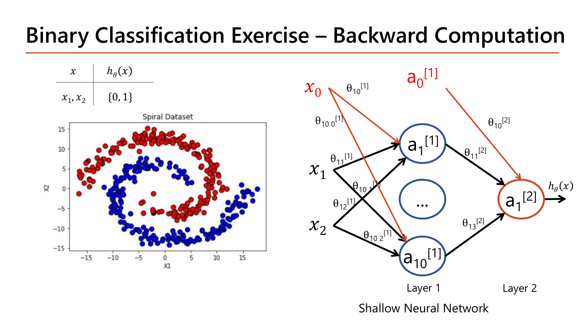
หน้า 48 ถามส่วน backward ของเครือข่ายเดียวกัน. ประเด็นทั้งหมดของแบบฝึกหัดนี้คือ: สูตรไม่เปลี่ยนเลยแม้ hidden จะมี 10 node แทน 2 node — เปลี่ยนแค่ช่วงของ \(j\).
สังเกตว่า \(a_0^{[1]}\) ไม่มี \(\delta\) เพราะมันเป็นค่าคงที่ 1 ไม่ได้มาจาก \(z\) ใดๆ ⇒ มี \(\delta^{(1)}\) เพียง 10 ตัว ไม่ใช่ 11
รวมแล้วต้องคำนวณ gradient \(30 + 11 = 41\) ค่าต่อหนึ่งรอบ — ตรงกับจำนวนพารามิเตอร์ที่นับไว้ในโจทย์ regularization หน้า 42 พอดี (เครือข่ายเดียวกัน). และสูตรทุกบรรทัดเหมือนกับ §3 ทุกตัวอักษร ต่างแค่ \(j\) วิ่งถึง 10 แทน 2.
หมายเหตุ: เนื้อหาทั้ง 49 หน้านี้เหมือนกับ Lecture2.pdf หน้า 50-98 เป๊ะทุกตัวอักษร (ดู Lesson 2 หมายเหตุต้นบท) ภาคผนวกนี้จึงครอบคลุมทั้ง Lecture2.pdf หน้า 50-98 ไปในตัว.
| หน้า | เนื้อหา | สถานะ |
|---|---|---|
| 1–2 | Cost Function (regression / classification) · Parameter Learning, gradient descent, nonconvex – local optima | ✓ หัวข้อ 0 (มีรูปทั้งสองหน้า, สูตรครบ, ตัวอย่างตัวเลข) |
| 3–5 | Backpropagation เกริ่นนำ + Chain Rule และโจทย์ฝึก 2 ข้อ (e^(x³), (2x−5)¹⁰) | ✓ หัวข้อ 1 (คำศัพท์ที่ทำสีครบ, เฉลยโจทย์ทั้งสองข้อพร้อมตรวจตัวเลข) |
| 6 | Apply Chain Rule to Backpropagation — ∂J/∂θ[2], ∂J/∂θ[1], 2 consecutive steps | ✓ หัวข้อ 2 (มีรูป, ไล่ทอดโซ่ทีละทอด) |
| 7 | Forward Computation (1 example) — z=Σθx, a=g(z), bias x₀ และ a₀⁽¹⁾ | ✓ หัวข้อ 2.1 (มีรูป, อธิบายระบบ index) |
| 8 | Backward Computation — นิยาม δ, L, สูตร δ⁽¹⁾ จาก δ⁽²⁾ | ✓ หัวข้อ 2.2 (มีรูป, แยกความหมายของ 3 ตัวคูณ) |
| 9 | Derive Backpropagation (Small NN) — logistic regression เป็นกรณีเล็กสุด | ✓ หัวข้อ 2.3 (มีรูป, เทียบสูตรกับกฎ backprop) |
| 10 | Mathematical Proof — พิสูจน์ δ ด้วย Chain Rule เต็มขั้น | ✓ หัวข้อ 2.4 (มีรูป, พิสูจน์ครบ 3 ชิ้นทีละบรรทัด) |
| 11–16 | Example — forward/backward/accumulate ของ 2 ตัวอย่าง และ gradient descent 1 รอบ (α=0.1) | ✓ หัวข้อ 3 (มีรูปครบทั้ง 6 หน้า, กรอกตัวเลขที่สไลด์เว้นไว้ทุกช่อง ตรวจด้วย numpy) |
| 17–18 | Backpropagation Algorithm — forward, δ⁽ᴸ⁾, backward, Δ, D, update + กล่อง Intuition | ✓ หัวข้อ 4 (มีรูปทั้งสองหน้า, เรียบเรียงเป็น 6 ขั้น) |
| 19 | From Backpropagation to Automatic Differentiation — forward/reverse-mode AD + โค้ด PyTorch | ✓ หัวข้อ 4A.1 (มีรูป, โค้ดใน <pre> + ตารางอธิบายทีละบรรทัด) |
| 20 | Dimension of Parameters — กฎ b × (a+1) | ✓ หัวข้อ 4A.2 (มีรูป, ฝึกใช้กฎ 3 เครือข่าย, ชี้ typo θ₁₄) |
| 21 | Parameters Initialization — redundant hidden units, break symmetry, −ε < θ < ε + โค้ด numpy | ✓ หัวข้อ 4A.3 (มีรูป, ตารางสาธิต symmetry 5 รอบ, โค้ดใน <pre> + ตารางอธิบาย) |
| 22 | Unrolling Parameters — np.concatenate / np.reshape กลับเป็น Theta1, Theta2 | ✓ หัวข้อ 4A.4 (มีรูป, โค้ดใน <pre> + ตารางอธิบาย, ระบุ shape จริง) |
| 23–24 | More on Activation Function (นิยาม, bias unit, weight) · Activation ที่ hidden layer และสูตร gradient | ✓ หัวข้อ 5 (มีรูปทั้งสองหน้า, prereq เรื่อง e^x) |
| 25 | Sigmoid and its Derivative — พิสูจน์เต็ม σ'=σ(1−σ) | ✓ หัวข้อ 5A.1 (มีรูป, พิสูจน์ 4 ขั้น + ตารางค่า) |
| 26 | Tanh and its Derivative — พิสูจน์เต็ม f'(x)=1−f(x)² | ✓ หัวข้อ 5A.2 (มีรูป, พิสูจน์ 5 ขั้นตามบรรทัดในสไลด์) |
| 27 | Sigmoid vs Tanh — ช่วง output, zero-centered, ทั้งคู่ช้าเมื่อ x ใหญ่/เล็ก | ✓ หัวข้อ 5A.3 (มีรูป, อ่านค่ายอดอนุพันธ์ 0.25 vs 1.0) |
| 28 | Gradient Descent + เหตุผลว่าทำไม activation ที่ไม่ zero-centered เป็นปัญหา (ภาพซิกแซก) | ✓ หัวข้อ 5A.4 (มีรูป, อธิบายด้วยเครื่องหมายของ gradient จริงจากหัวข้อ 3) |
| 29 | Comparison between sigmoid and tanh — accuracy 98.666667 vs 99.833333 | ✓ หัวข้อ 5A.5 (มีรูป, ผลลัพธ์ใน <pre> + ตารางอธิบาย) |
| 30 | ReLU and its Derivative | ✓ หัวข้อ 5B.1 (มีรูป, ค่าตัวอย่าง, เทียบ 0.25¹⁰ กับ 1¹⁰) |
| 31 | Leaky ReLU and its Derivative | ✓ หัวข้อ 5B.2 (มีรูป, เทียบค่าที่ x=−5) |
| 32 | ตารางเปรียบเทียบ Sigmoid/Tanh/ReLU/Leaky ReLU ครบ 5 แถว | ✓ หัวข้อ 5B.3 (มีรูป + ถอดตารางทั้งตารางเป็น HTML) |
| 33 | What Activation to use for Hidden Layers — ReLU state of the art, Softplus, ELU/SELU/GELU | ✓ หัวข้อ 5B.4 (มีรูป, ค่า Softplus เทียบ ReLU 3 จุด) |
| 34 | Comparison — sigmoid/tanh/relu, accuracy 100.000000 ที่ 4000 รอบ | ✓ หัวข้อ 5B.5 (มีรูป, ผลลัพธ์ใน <pre> + ตารางอธิบาย) |
| 35 | Why not Linear Activation Function? | ✓ หัวข้อ 5C (มีรูป, พิสูจน์ด้วยตัวเลข 3 layer) |
| 36 | Activation Function at the Output Layer — regression / binary / multiclass | ✓ หัวข้อ 6 (มีรูป + ตารางสรุปพร้อมเครื่องหมาย ***) |
| 37 | Multi-class Classification (Sigmoid at Output Node) — one-hot encoding + cost | ✓ หัวข้อ 6 (มีรูป, ตาราง one-hot ทั้ง 4 แถวของสไลด์) |
| 38 | Multi-class Classification (Softmax at Output Node) — เหตุผลของ exponential + loss | ✓ หัวข้อ 6 (มีรูป, คำนวณ softmax ด้วยมือ 4 ขั้น + เหตุผล 2 ข้อ) |
| 39–40 | Model Evaluation (60-20-20, 70-15-15, k-fold, data leakage) · Model Improvement (bias/variance) | ✓ หัวข้อ 6A (มีรูปทั้งสองหน้า, เดิน 5-fold ด้วยตัวเลข, ตารางยาแก้สองโรค) |
| 41 | Regularization — keep all features, constrains or regularizes, เทอม L2 | ✓ หัวข้อ 7 (มีรูป, อธิบายผลต่อรูปร่างเส้นแบ่ง) |
| 42 | Cost Function with Regularization — L2/Ridge vs L1/Lasso + โจทย์นับพารามิเตอร์ | ✓ หัวข้อ 7 (มีรูป, ตารางเทียบ, เฉลยโจทย์ = 41) |
| 43 | Gradient Descent with L2 Regularization — สูตรแยก j=0 กับ j≥1 | ✓ หัวข้อ 7 (มีรูป, คำนวณผลต่อ gradient จริง 1 ตัว) |
| 44 | Best Practice to Model Improvement — เริ่มเล็กแล้วค่อยขยายจนกว่า validation loss จะอิ่มตัว | ✓ หัวข้อ 7A (มีรูป, อ่านกราฟทั้งสามสถานะด้วยค่าจริง) |
| 45 | Parameters and Hyper Parameter — นิยามและรายการ hyperparameter | ✓ หัวข้อ 7A (มีรูป, เส้นแบ่งสองคำ) |
| 46 | Hyperparameter Tuning Guideline — #layer 1-5, #hidden 5-100, พีระมิดที่เลิกใช้, learning rate | ✓ หัวข้อ 7A (มีรูป, ตารางข้อดีข้อเสีย, เหตุผลเชิงจำนวน hyperparameter) |
| 47–48 | Binary Classification Exercise — Forward และ Backward Computation (hidden 10 node) | ✓ หัวข้อ 8 (มีรูปทั้งสองหน้า, เฉลยสูตรครบทุกขั้น, ชี้ typo θ₁₃⁽²⁾) |
| 49 | References — รายชื่อหนังสือ/คอร์สอ้างอิง (Chollet, Géron, Andrew Ng, Jeff Heaton) | etc — หน้าบรรณานุกรมล้วน ไม่มีเนื้อหาวิชา |
สงสัยตรงไหน ถามได้เลยในแชท — ผมเป็นผู้สอนของคุณ ถามซ้ำได้ ถามลึกได้ ไม่ต้องเกรงใจ.